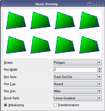
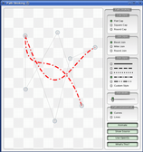
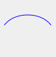

QPainter¶
Inherited by: QStylePainter
Synopsis¶
Functions¶
- def
background() - def
backgroundMode() - def
begin(arg__1) - def
beginNativePainting() - def
boundingRect(rect, flags, text) - def
boundingRect(rect, flags, text) - def
boundingRect(rect, text[, o=QTextOption()]) - def
boundingRect(x, y, w, h, flags, text) - def
brush() - def
brushOrigin() - def
clipBoundingRect() - def
clipPath() - def
clipRegion() - def
combinedMatrix() - def
combinedTransform() - def
compositionMode() - def
device() - def
deviceMatrix() - def
deviceTransform() - def
drawArc(arg__1, a, alen) - def
drawArc(rect, a, alen) - def
drawArc(x, y, w, h, a, alen) - def
drawChord(arg__1, a, alen) - def
drawChord(rect, a, alen) - def
drawChord(x, y, w, h, a, alen) - def
drawConvexPolygon(arg__1) - def
drawConvexPolygon(arg__1) - def
drawConvexPolygon(polygon) - def
drawConvexPolygon(polygon) - def
drawEllipse(center, rx, ry) - def
drawEllipse(center, rx, ry) - def
drawEllipse(r) - def
drawEllipse(r) - def
drawEllipse(x, y, w, h) - def
drawImage(p, image) - def
drawImage(p, image) - def
drawImage(p, image, sr[, flags=Qt.AutoColor]) - def
drawImage(p, image, sr[, flags=Qt.AutoColor]) - def
drawImage(r, image) - def
drawImage(r, image) - def
drawImage(targetRect, image, sourceRect[, flags=Qt.AutoColor]) - def
drawImage(targetRect, image, sourceRect[, flags=Qt.AutoColor]) - def
drawImage(x, y, image[, sx=0[, sy=0[, sw=-1[, sh=-1[, flags=Qt.AutoColor]]]]]) - def
drawLine(line) - def
drawLine(line) - def
drawLine(p1, p2) - def
drawLine(p1, p2) - def
drawLine(x1, y1, x2, y2) - def
drawLines(lines) - def
drawLines(lines) - def
drawLines(pointPairs) - def
drawLines(pointPairs) - def
drawPath(path) - def
drawPicture(p, picture) - def
drawPicture(p, picture) - def
drawPicture(x, y, picture) - def
drawPie(arg__1, a, alen) - def
drawPie(rect, a, alen) - def
drawPie(x, y, w, h, a, alen) - def
drawPixmap(p, pm) - def
drawPixmap(p, pm) - def
drawPixmap(p, pm, sr) - def
drawPixmap(p, pm, sr) - def
drawPixmap(r, pm) - def
drawPixmap(targetRect, pixmap, sourceRect) - def
drawPixmap(targetRect, pixmap, sourceRect) - def
drawPixmap(x, y, pm) - def
drawPixmap(x, y, pm, sx, sy, sw, sh) - def
drawPixmap(x, y, w, h, pm) - def
drawPixmap(x, y, w, h, pm, sx, sy, sw, sh) - def
drawPixmapFragments(fragments, fragmentCount, pixmap[, hints=QPainter.PixmapFragmentHints()]) - def
drawPoint(p) - def
drawPoint(pt) - def
drawPoint(x, y) - def
drawPoints(arg__1) - def
drawPoints(arg__1) - def
drawPoints(points) - def
drawPoints(points) - def
drawPolygon(arg__1, arg__2) - def
drawPolygon(arg__1, arg__2) - def
drawPolygon(polygon[, fillRule=Qt.OddEvenFill]) - def
drawPolygon(polygon[, fillRule=Qt.OddEvenFill]) - def
drawPolyline(arg__1) - def
drawPolyline(arg__1) - def
drawPolyline(polygon) - def
drawPolyline(polyline) - def
drawRect(rect) - def
drawRect(rect) - def
drawRect(x1, y1, w, h) - def
drawRects(rectangles) - def
drawRects(rectangles) - def
drawRoundRect(r[, xround=25[, yround=25]]) - def
drawRoundRect(r[, xround=25[, yround=25]]) - def
drawRoundRect(x, y, w, h[, xRound=25[, yRound=25]]) - def
drawRoundedRect(rect, xRadius, yRadius[, mode=Qt.AbsoluteSize]) - def
drawRoundedRect(rect, xRadius, yRadius[, mode=Qt.AbsoluteSize]) - def
drawRoundedRect(x, y, w, h, xRadius, yRadius[, mode=Qt.AbsoluteSize]) - def
drawStaticText(left, top, staticText) - def
drawStaticText(topLeftPosition, staticText) - def
drawStaticText(topLeftPosition, staticText) - def
drawText(p, s) - def
drawText(p, s) - def
drawText(r, flags, text) - def
drawText(r, flags, text) - def
drawText(r, text[, o=QTextOption()]) - def
drawText(x, y, s) - def
drawText(x, y, w, h, flags, text) - def
drawTextItem(p, ti) - def
drawTextItem(p, ti) - def
drawTextItem(x, y, ti) - def
drawTiledPixmap(arg__1, arg__2[, pos=QPoint()]) - def
drawTiledPixmap(rect, pm[, offset=QPointF()]) - def
drawTiledPixmap(x, y, w, h, arg__5[, sx=0[, sy=0]]) - def
end() - def
endNativePainting() - def
eraseRect(arg__1) - def
eraseRect(arg__1) - def
eraseRect(x, y, w, h) - def
fillPath(path, brush) - def
fillRect(arg__1, arg__2) - def
fillRect(arg__1, arg__2) - def
fillRect(arg__1, color) - def
fillRect(arg__1, color) - def
fillRect(r, c) - def
fillRect(r, c) - def
fillRect(r, style) - def
fillRect(r, style) - def
fillRect(x, y, w, h, arg__5) - def
fillRect(x, y, w, h, c) - def
fillRect(x, y, w, h, color) - def
fillRect(x, y, w, h, style) - def
font() - def
fontInfo() - def
fontMetrics() - def
hasClipping() - def
initFrom(device) - def
isActive() - def
layoutDirection() - def
matrix() - def
matrixEnabled() - def
opacity() - def
paintEngine() - def
pen() - def
renderHints() - def
resetMatrix() - def
resetTransform() - def
restore() - def
rotate(a) - def
save() - def
scale(sx, sy) - def
setBackground(bg) - def
setBackgroundMode(mode) - def
setBrush(brush) - def
setBrush(style) - def
setBrushOrigin(arg__1) - def
setBrushOrigin(arg__1) - def
setBrushOrigin(x, y) - def
setClipPath(path[, op=Qt.ReplaceClip]) - def
setClipRect(arg__1[, op=Qt.ReplaceClip]) - def
setClipRect(arg__1[, op=Qt.ReplaceClip]) - def
setClipRect(x, y, w, h[, op=Qt.ReplaceClip]) - def
setClipRegion(arg__1[, op=Qt.ReplaceClip]) - def
setClipping(enable) - def
setCompositionMode(mode) - def
setFont(f) - def
setLayoutDirection(direction) - def
setMatrix(matrix[, combine=false]) - def
setMatrixEnabled(enabled) - def
setOpacity(opacity) - def
setPen(color) - def
setPen(pen) - def
setPen(style) - def
setRenderHint(hint[, on=true]) - def
setRenderHints(hints[, on=true]) - def
setTransform(transform[, combine=false]) - def
setViewTransformEnabled(enable) - def
setViewport(viewport) - def
setViewport(x, y, w, h) - def
setWindow(window) - def
setWindow(x, y, w, h) - def
setWorldMatrix(matrix[, combine=false]) - def
setWorldMatrixEnabled(enabled) - def
setWorldTransform(matrix[, combine=false]) - def
shear(sh, sv) - def
strokePath(path, pen) - def
testRenderHint(hint) - def
transform() - def
translate(dx, dy) - def
translate(offset) - def
translate(offset) - def
viewTransformEnabled() - def
viewport() - def
window() - def
worldMatrix() - def
worldMatrixEnabled() - def
worldTransform()
Static functions¶
- def
redirected(device[, offset=nullptr]) - def
restoreRedirected(device) - def
setRedirected(device, replacement[, offset=QPoint()])
Detailed Description¶
The
PySide2.QtGui.QPainterclass performs low-level painting on widgets and other paint devices.
PySide2.QtGui.QPainterprovides highly optimized functions to do most of the drawing GUI programs require. It can draw everything from simple lines to complex shapes like pies and chords. It can also draw aligned text and pixmaps. Normally, it draws in a “natural” coordinate system, but it can also do view and world transformation.PySide2.QtGui.QPaintercan operate on any object that inherits thePySide2.QtGui.QPaintDeviceclass.The common use of
PySide2.QtGui.QPainteris inside a widget’s paint event: Construct and customize (e.g. set the pen or the brush) the painter. Then draw. Remember to destroy thePySide2.QtGui.QPainterobject after drawing. For example:def paintEvent(self, paintEvent): painter = QPainter(self) painter.setPen(Qt.blue) painter.setFont(QFont("Arial", 30)) painter.drawText(rect(), Qt.AlignCenter, "Qt")The core functionality of
PySide2.QtGui.QPainteris drawing, but the class also provide several functions that allows you to customizePySide2.QtGui.QPainter‘s settings and its rendering quality, and others that enable clipping. In addition you can control how different shapes are merged together by specifying the painter’s composition mode.The
PySide2.QtGui.QPainter.isActive()function indicates whether the painter is active. A painter is activated by thePySide2.QtGui.QPainter.begin()function and the constructor that takes aPySide2.QtGui.QPaintDeviceargument. ThePySide2.QtGui.QPainter.end()function, and the destructor, deactivates it.Together with the
PySide2.QtGui.QPaintDeviceandPySide2.QtGui.QPaintEngineclasses,PySide2.QtGui.QPainterform the basis for Qt’s paint system.PySide2.QtGui.QPainteris the class used to perform drawing operations.PySide2.QtGui.QPaintDevicerepresents a device that can be painted on using aPySide2.QtGui.QPainter.PySide2.QtGui.QPaintEngineprovides the interface that the painter uses to draw onto different types of devices. If the painter is active,PySide2.QtGui.QPainter.device()returns the paint device on which the painter paints, andPySide2.QtGui.QPainter.paintEngine()returns the paint engine that the painter is currently operating on. For more information, see the Paint System .Sometimes it is desirable to make someone else paint on an unusual
PySide2.QtGui.QPaintDevice.PySide2.QtGui.QPaintersupports a static function to do this,PySide2.QtGui.QPainter.setRedirected().Warning
When the paintdevice is a widget,
PySide2.QtGui.QPaintercan only be used inside a paintEvent() function or in a function called by paintEvent().
Settings¶
There are several settings that you can customize to make
PySide2.QtGui.QPainterdraw according to your preferences:
PySide2.QtGui.QPainter.font()is the font used for drawing text. If the painterPySide2.QtGui.QPainter.isActive(), you can retrieve information about the currently set font, and its metrics, using thePySide2.QtGui.QPainter.fontInfo()andPySide2.QtGui.QPainter.fontMetrics()functions respectively.PySide2.QtGui.QPainter.brush()defines the color or pattern that is used for filling shapes.PySide2.QtGui.QPainter.pen()defines the color or stipple that is used for drawing lines or boundaries.PySide2.QtGui.QPainter.backgroundMode()defines whether there is aPySide2.QtGui.QPainter.background()or not, i.e it is eitherQt.OpaqueModeorQt.TransparentMode.PySide2.QtGui.QPainter.background()only applies whenPySide2.QtGui.QPainter.backgroundMode()isQt.OpaqueModeandPySide2.QtGui.QPainter.pen()is a stipple. In that case, it describes the color of the background pixels in the stipple.PySide2.QtGui.QPainter.brushOrigin()defines the origin of the tiled brushes, normally the origin of widget’s background.PySide2.QtGui.QPainter.viewport(),PySide2.QtGui.QPainter.window(),PySide2.QtGui.QPainter.worldTransform()make up the painter’s coordinate transformation system. For more information, see theCoordinate Transformationssection and the Coordinate System documentation.PySide2.QtGui.QPainter.hasClipping()tells whether the painter clips at all. (The paint device clips, too.) If the painter clips, it clips toPySide2.QtGui.QPainter.clipRegion().PySide2.QtGui.QPainter.layoutDirection()defines the layout direction used by the painter when drawing text.PySide2.QtGui.QPainter.worldMatrixEnabled()tells whether world transformation is enabled.PySide2.QtGui.QPainter.viewTransformEnabled()tells whether view transformation is enabled.Note that some of these settings mirror settings in some paint devices, e.g.
QWidget.font(). TheQPainter.begin()function (or equivalently thePySide2.QtGui.QPainterconstructor) copies these attributes from the paint device.You can at any time save the
PySide2.QtGui.QPainter‘s state by calling thePySide2.QtGui.QPainter.save()function which saves all the available settings on an internal stack. ThePySide2.QtGui.QPainter.restore()function pops them back.
Drawing¶
PySide2.QtGui.QPainterprovides functions to draw most primitives:PySide2.QtGui.QPainter.drawPoint(),PySide2.QtGui.QPainter.drawPoints(),PySide2.QtGui.QPainter.drawLine(),PySide2.QtGui.QPainter.drawRect(),PySide2.QtGui.QPainter.drawRoundedRect(),PySide2.QtGui.QPainter.drawEllipse(),PySide2.QtGui.QPainter.drawArc(),PySide2.QtGui.QPainter.drawPie(),PySide2.QtGui.QPainter.drawChord(),PySide2.QtGui.QPainter.drawPolyline(),PySide2.QtGui.QPainter.drawPolygon(),PySide2.QtGui.QPainter.drawConvexPolygon()and drawCubicBezier(). The two convenience functions,PySide2.QtGui.QPainter.drawRects()andPySide2.QtGui.QPainter.drawLines(), draw the given number of rectangles or lines in the given array ofQRectsorQLinesusing the current pen and brush.The
PySide2.QtGui.QPainterclass also provides thePySide2.QtGui.QPainter.fillRect()function which fills the givenPySide2.QtCore.QRect, with the givenPySide2.QtGui.QBrush, and thePySide2.QtGui.QPainter.eraseRect()function that erases the area inside the given rectangle.All of these functions have both integer and floating point versions.
 Basic Drawing Example
The Basic Drawing example shows how to display basic graphics primitives in a variety of styles using thePySide2.QtGui.QPainterclass.If you need to draw a complex shape, especially if you need to do so repeatedly, consider creating a
PySide2.QtGui.QPainterPathand drawing it usingPySide2.QtGui.QPainter.drawPath().
Painter Paths example
The
PySide2.QtGui.QPainterPathclass provides a container for painting operations, enabling graphical shapes to be constructed and reused.The Painter Paths example shows how painter paths can be used to build complex shapes for rendering.
PySide2.QtGui.QPainteralso provides thePySide2.QtGui.QPainter.fillPath()function which fills the givenPySide2.QtGui.QPainterPathwith the givenPySide2.QtGui.QBrush, and thePySide2.QtGui.QPainter.strokePath()function that draws the outline of the given path (i.e. strokes the path).See also the Vector Deformation example which shows how to use advanced vector techniques to draw text using a
PySide2.QtGui.QPainterPath, the Gradients example which shows the different types of gradients that are available in Qt, and the Path Stroking example which shows Qt’s built-in dash patterns and shows how custom patterns can be used to extend the range of available patterns.
Vector Deformation Gradients Path Stroking  Text drawing is done using
PySide2.QtGui.QPainter.drawText(). When you need fine-grained positioning,PySide2.QtGui.QPainter.boundingRect()tells you where a givenPySide2.QtGui.QPainter.drawText()command will draw.


Drawing Pixmaps and Images¶
There are functions to draw pixmaps/images, namely
PySide2.QtGui.QPainter.drawPixmap(),PySide2.QtGui.QPainter.drawImage()andPySide2.QtGui.QPainter.drawTiledPixmap(). BothPySide2.QtGui.QPainter.drawPixmap()andPySide2.QtGui.QPainter.drawImage()produce the same result, except thatPySide2.QtGui.QPainter.drawPixmap()is faster on-screen whilePySide2.QtGui.QPainter.drawImage()may be faster on aPySide2.QtPrintSupport.QPrinteror other devices.There is a
PySide2.QtGui.QPainter.drawPicture()function that draws the contents of an entirePySide2.QtGui.QPicture. ThePySide2.QtGui.QPainter.drawPicture()function is the only function that disregards all the painter’s settings asPySide2.QtGui.QPicturehas its own settings.
Drawing High Resolution Versions of Pixmaps and Images¶
High resolution versions of pixmaps have a device pixel ratio value larger than 1 (see
PySide2.QtGui.QImageReader,QPixmap.devicePixelRatio()). Should it match the value of the underlyingPySide2.QtGui.QPaintDevice, it is drawn directly onto the device with no additional transformation applied.This is for example the case when drawing a
PySide2.QtGui.QPixmapof 64x64 pixels size with a device pixel ratio of 2 onto a high DPI screen which also has a device pixel ratio of 2. Note that the pixmap is then effectively 32x32 pixels in user space . Code paths in Qt that calculate layout geometry based on the pixmap size will use this size. The net effect of this is that the pixmap is displayed as high DPI pixmap rather than a large pixmap.
Rendering Quality¶
To get the optimal rendering result using
PySide2.QtGui.QPainter, you should use the platform independentPySide2.QtGui.QImageas paint device; i.e. usingPySide2.QtGui.QImagewill ensure that the result has an identical pixel representation on any platform.The
PySide2.QtGui.QPainterclass also provides a means of controlling the rendering quality through itsQPainter.RenderHintenum and the support for floating point precision: All the functions for drawing primitives has a floating point version. These are often used in combination with theQPainter.Antialiasingrender hint.
Concentric Circles Example
The Concentric Circles example shows the improved rendering quality that can be obtained using floating point precision and anti-aliasing when drawing custom widgets.
The application’s main window displays several widgets which are drawn using the various combinations of precision and anti-aliasing.
The
QPainter.RenderHintenum specifies flags toPySide2.QtGui.QPainterthat may or may not be respected by any given engine.QPainter.Antialiasingindicates that the engine should antialias edges of primitives if possible,QPainter.TextAntialiasingindicates that the engine should antialias text if possible, and theQPainter.SmoothPixmapTransformindicates that the engine should use a smooth pixmap transformation algorithm.The
PySide2.QtGui.QPainter.renderHints()function returns a flag that specifies the rendering hints that are set for this painter. Use thePySide2.QtGui.QPainter.setRenderHint()function to set or clear the currently setRenderHints.

Coordinate Transformations¶
Normally, the
PySide2.QtGui.QPainteroperates on the device’s own coordinate system (usually pixels), butPySide2.QtGui.QPainterhas good support for coordinate transformations.
nop PySide2.QtGui.QPainter.rotate()PySide2.QtGui.QPainter.scale()PySide2.QtGui.QPainter.translate()The most commonly used transformations are scaling, rotation, translation and shearing. Use the
PySide2.QtGui.QPainter.scale()function to scale the coordinate system by a given offset, thePySide2.QtGui.QPainter.rotate()function to rotate it clockwise andPySide2.QtGui.QPainter.translate()to translate it (i.e. adding a given offset to the points). You can also twist the coordinate system around the origin using thePySide2.QtGui.QPainter.shear()function. See the Affine Transformations example for a visualization of a sheared coordinate system.See also the Transformations example which shows how transformations influence the way that
PySide2.QtGui.QPainterrenders graphics primitives. In particular it shows how the order of transformations affects the result.
Affine Transformations Example
The Affine Transformations example shows Qt’s ability to perform affine transformations on painting operations. The demo also allows the user to experiment with the transformation operations and see the results immediately.All the tranformation operations operate on the transformation
PySide2.QtGui.QPainter.worldTransform(). A matrix transforms a point in the plane to another point. For more information about the transformation matrix, see the Coordinate System andPySide2.QtGui.QTransformdocumentation.The
PySide2.QtGui.QPainter.setWorldTransform()function can replace or add to the currently setPySide2.QtGui.QPainter.worldTransform(). ThePySide2.QtGui.QPainter.resetTransform()function resets any transformations that were made usingPySide2.QtGui.QPainter.translate(),PySide2.QtGui.QPainter.scale(),PySide2.QtGui.QPainter.shear(),PySide2.QtGui.QPainter.rotate(),PySide2.QtGui.QPainter.setWorldTransform(),PySide2.QtGui.QPainter.setViewport()andPySide2.QtGui.QPainter.setWindow()functions. ThePySide2.QtGui.QPainter.deviceTransform()returns the matrix that transforms from logical coordinates to device coordinates of the platform dependent paint device. The latter function is only needed when using platform painting commands on the platform dependent handle, and the platform does not do transformations nativly.When drawing with
PySide2.QtGui.QPainter, we specify points using logical coordinates which then are converted into the physical coordinates of the paint device. The mapping of the logical coordinates to the physical coordinates are handled byPySide2.QtGui.QPainter‘sPySide2.QtGui.QPainter.combinedTransform(), a combination ofPySide2.QtGui.QPainter.viewport()andPySide2.QtGui.QPainter.window()andPySide2.QtGui.QPainter.worldTransform(). ThePySide2.QtGui.QPainter.viewport()represents the physical coordinates specifying an arbitrary rectangle, thePySide2.QtGui.QPainter.window()describes the same rectangle in logical coordinates, and thePySide2.QtGui.QPainter.worldTransform()is identical with the transformation matrix.See also Coordinate System


Clipping¶
PySide2.QtGui.QPaintercan clip any drawing operation to a rectangle, a region, or a vector path. The current clip is available using the functionsPySide2.QtGui.QPainter.clipRegion()andPySide2.QtGui.QPainter.clipPath(). Whether paths or regions are preferred (faster) depends on the underlyingPySide2.QtGui.QPainter.paintEngine(). For example, thePySide2.QtGui.QImagepaint engine prefers paths while the X11 paint engine prefers regions. Setting a clip is done in the painters logical coordinates.After
PySide2.QtGui.QPainter‘s clipping, the paint device may also clip. For example, most widgets clip away the pixels used by child widgets, and most printers clip away an area near the edges of the paper. This additional clipping is not reflected by the return value ofPySide2.QtGui.QPainter.clipRegion()orPySide2.QtGui.QPainter.hasClipping().
Composition Modes¶
PySide2.QtGui.QPainterprovides theQPainter.CompositionModeenum which defines the Porter-Duff rules for digital image compositing; it describes a model for combining the pixels in one image, the source, with the pixels in another image, the destination.The two most common forms of composition are
SourceandSourceOver.Sourceis used to draw opaque objects onto a paint device. In this mode, each pixel in the source replaces the corresponding pixel in the destination. InSourceOvercomposition mode, the source object is transparent and is drawn on top of the destination.Note that composition transformation operates pixelwise. For that reason, there is a difference between using the graphic primitive itself and its bounding rectangle: The bounding rect contains pixels with alpha == 0 (i.e the pixels surrounding the primitive). These pixels will overwrite the other image’s pixels, affectively clearing those, while the primitive only overwrites its own area.
Composition Modes Example
The Composition Modes example, available in Qt’s examples directory, allows you to experiment with the various composition modes and see the results immediately.

Limitations¶
If you are using coordinates with Qt’s raster-based paint engine, it is important to note that, while coordinates greater than +/- 2 15 can be used, any painting performed with coordinates outside this range is not guaranteed to be shown; the drawing may be clipped. This is due to the use of
short intin the implementation.The outlines generated by Qt’s stroker are only an approximation when dealing with curved shapes. It is in most cases impossible to represent the outline of a bezier curve segment using another bezier curve segment, and so Qt approximates the curve outlines by using several smaller curves. For performance reasons there is a limit to how many curves Qt uses for these outlines, and thus when using large pen widths or scales the outline error increases. To generate outlines with smaller errors it is possible to use the
PySide2.QtGui.QPainterPathStrokerclass, which has the setCurveThreshold member function which let’s the user specify the error tolerance. Another workaround is to convert the paths to polygons first and then draw the polygons instead.
Performance¶
PySide2.QtGui.QPainteris a rich framework that allows developers to do a great variety of graphical operations, such as gradients, composition modes and vector graphics. AndPySide2.QtGui.QPaintercan do this across a variety of different hardware and software stacks. Naturally the underlying combination of hardware and software has some implications for performance, and ensuring that every single operation is fast in combination with all the various combinations of composition modes, brushes, clipping, transformation, etc, is close to an impossible task because of the number of permutations. As a compromise we have selected a subset of thePySide2.QtGui.QPainterAPI and backends, where performance is guaranteed to be as good as we can sensibly get it for the given combination of hardware and software.The backends we focus on as high-performance engines are:
- Raster - This backend implements all rendering in pure software and is always used to render into QImages. For optimal performance only use the format types
QImage.Format_ARGB32_Premultiplied,QImage.Format_RGB32orQImage.Format_RGB16. Any other format, includingQImage.Format_ARGB32, has significantly worse performance. This engine is used by default forPySide2.QtWidgets.QWidgetandPySide2.QtGui.QPixmap.- OpenGL 2.0 (ES) - This backend is the primary backend for hardware accelerated graphics. It can be run on desktop machines and embedded devices supporting the OpenGL 2.0 or OpenGL/ES 2.0 specification. This includes most graphics chips produced in the last couple of years. The engine can be enabled by using
PySide2.QtGui.QPainteronto aPySide2.QtWidgets.QOpenGLWidget.These operations are:
- Simple transformations, meaning translation and scaling, pluss 0, 90, 180, 270 degree rotations.
drawPixmap()in combination with simple transformations and opacity with non-smooth transformation mode (QPainter::SmoothPixmapTransformnot enabled as a render hint).- Rectangle fills with solid color, two-color linear gradients and simple transforms.
- Rectangular clipping with simple transformations and intersect clip.
- Composition Modes
QPainter::CompositionMode_SourceandQPainter.CompositionMode_SourceOver- Rounded rectangle filling using solid color and two-color linear gradients fills.
- 3x3 patched pixmaps, via .
This list gives an indication of which features to safely use in an application where performance is critical. For certain setups, other operations may be fast too, but before making extensive use of them, it is recommended to benchmark and verify them on the system where the software will run in the end. There are also cases where expensive operations are ok to use, for instance when the result is cached in a
PySide2.QtGui.QPixmap.See also
PySide2.QtGui.QPaintDevicePySide2.QtGui.QPaintEngineQt SVG Basic Drawing Example Drawing Utility Functions
-
class
PySide2.QtGui.QPainter¶ -
class
PySide2.QtGui.QPainter(arg__1) Parameters: arg__1 – PySide2.QtGui.QPaintDeviceConstructs a painter.
Constructs a painter that begins painting the paint
deviceimmediately.This constructor is convenient for short-lived painters, e.g. in a
QWidget.paintEvent()and should be used only once. The constructor callsPySide2.QtGui.QPainter.begin()for you and thePySide2.QtGui.QPainterdestructor automatically callsPySide2.QtGui.QPainter.end().Here’s an example using
PySide2.QtGui.QPainter.begin()andPySide2.QtGui.QPainter.end():def paintEvent(self, paintEvent): p = QPainter() p.begin(self) p.drawLine(...) # drawing code p.end()
The same example using this constructor:
self paintEvent(self, paintEvent): p = QPainter(self) p.drawLine(...) # drawing code
Since the constructor cannot provide feedback when the initialization of the painter failed you should rather use
PySide2.QtGui.QPainter.begin()andPySide2.QtGui.QPainter.end()to paint on external devices, e.g. printers.
-
PySide2.QtGui.QPainter.RenderHint¶ Renderhints are used to specify flags to
PySide2.QtGui.QPainterthat may or may not be respected by any given engine.Constant Description QPainter.Antialiasing Indicates that the engine should antialias edges of primitives if possible. QPainter.TextAntialiasing Indicates that the engine should antialias text if possible. To forcibly disable antialiasing for text, do not use this hint. Instead, set QFont.NoAntialiason your font’s style strategy.QPainter.SmoothPixmapTransform Indicates that the engine should use a smooth pixmap transformation algorithm (such as bilinear) rather than nearest neighbor. QPainter.HighQualityAntialiasing This value is obsolete and will be ignored, use the Antialiasing render hint instead. QPainter.NonCosmeticDefaultPen This value is obsolete, the default for PySide2.QtGui.QPenis now non-cosmetic.QPainter.Qt4CompatiblePainting Compatibility hint telling the engine to use the same X11 based fill rules as in Qt 4, where aliased rendering is offset by slightly less than half a pixel. Also will treat default constructed pens as cosmetic. Potentially useful when porting a Qt 4 application to Qt 5. See also
PySide2.QtGui.QPainter.renderHints()PySide2.QtGui.QPainter.setRenderHint()Rendering QualityConcentric Circles Example
-
PySide2.QtGui.QPainter.PixmapFragmentHint¶ Constant Description QPainter.OpaqueHint Indicates that the pixmap fragments to be drawn are opaque. Opaque fragments are potentially faster to draw. See also
QPainter.drawPixmapFragments()QPainter.PixmapFragment
Note
This enum was introduced in Qt 4.7.
-
PySide2.QtGui.QPainter.CompositionMode¶ Defines the modes supported for digital image compositing. Composition modes are used to specify how the pixels in one image, the source, are merged with the pixel in another image, the destination.
Please note that the bitwise raster operation modes, denoted with a RasterOp prefix, are only natively supported in the X11 and raster paint engines. This means that the only way to utilize these modes on the Mac is via a
PySide2.QtGui.QImage. The RasterOp denoted blend modes are not supported for pens and brushes with alpha components. Also, turning on theQPainter.Antialiasingrender hint will effectively disable the RasterOp modes.

The most common type is SourceOver (often referred to as just alpha blending) where the source pixel is blended on top of the destination pixel in such a way that the alpha component of the source defines the translucency of the pixel.
Several composition modes require an alpha channel in the source or target images to have an effect. For optimal performance the image format
Format_ARGB32_Premultipliedis preferred.When a composition mode is set it applies to all painting operator, pens, brushes, gradients and pixmap/image drawing.
Constant Description QPainter.CompositionMode_SourceOver This is the default mode. The alpha of the source is used to blend the pixel on top of the destination. QPainter.CompositionMode_DestinationOver The alpha of the destination is used to blend it on top of the source pixels. This mode is the inverse of . QPainter.CompositionMode_Clear The pixels in the destination are cleared (set to fully transparent) independent of the source. QPainter.CompositionMode_Source The output is the source pixel. (This means a basic copy operation and is identical to SourceOver when the source pixel is opaque). QPainter.CompositionMode_Destination The output is the destination pixel. This means that the blending has no effect. This mode is the inverse of . QPainter.CompositionMode_SourceIn The output is the source, where the alpha is reduced by that of the destination. QPainter.CompositionMode_DestinationIn The output is the destination, where the alpha is reduced by that of the source. This mode is the inverse of . QPainter.CompositionMode_SourceOut The output is the source, where the alpha is reduced by the inverse of destination. QPainter.CompositionMode_DestinationOut The output is the destination, where the alpha is reduced by the inverse of the source. This mode is the inverse of . QPainter.CompositionMode_SourceAtop The source pixel is blended on top of the destination, with the alpha of the source pixel reduced by the alpha of the destination pixel. QPainter.CompositionMode_DestinationAtop The destination pixel is blended on top of the source, with the alpha of the destination pixel is reduced by the alpha of the destination pixel. This mode is the inverse of . QPainter.CompositionMode_Xor The source, whose alpha is reduced with the inverse of the destination alpha, is merged with the destination, whose alpha is reduced by the inverse of the source alpha. is not the same as the bitwise Xor. QPainter.CompositionMode_Plus Both the alpha and color of the source and destination pixels are added together. QPainter.CompositionMode_Multiply The output is the source color multiplied by the destination. Multiplying a color with white leaves the color unchanged, while multiplying a color with black produces black. QPainter.CompositionMode_Screen The source and destination colors are inverted and then multiplied. Screening a color with white produces white, whereas screening a color with black leaves the color unchanged. QPainter.CompositionMode_Overlay Multiplies or screens the colors depending on the destination color. The destination color is mixed with the source color to reflect the lightness or darkness of the destination. QPainter.CompositionMode_Darken The darker of the source and destination colors is selected. QPainter.CompositionMode_Lighten The lighter of the source and destination colors is selected. QPainter.CompositionMode_ColorDodge The destination color is brightened to reflect the source color. A black source color leaves the destination color unchanged. QPainter.CompositionMode_ColorBurn The destination color is darkened to reflect the source color. A white source color leaves the destination color unchanged. QPainter.CompositionMode_HardLight Multiplies or screens the colors depending on the source color. A light source color will lighten the destination color, whereas a dark source color will darken the destination color. QPainter.CompositionMode_SoftLight Darkens or lightens the colors depending on the source color. Similar to . QPainter.CompositionMode_Difference Subtracts the darker of the colors from the lighter. Painting with white inverts the destination color, whereas painting with black leaves the destination color unchanged. QPainter.CompositionMode_Exclusion Similar to , but with a lower contrast. Painting with white inverts the destination color, whereas painting with black leaves the destination color unchanged. QPainter.RasterOp_SourceOrDestination Does a bitwise OR operation on the source and destination pixels (src OR dst). QPainter.RasterOp_SourceAndDestination Does a bitwise AND operation on the source and destination pixels (src AND dst). QPainter.RasterOp_SourceXorDestination Does a bitwise XOR operation on the source and destination pixels (src XOR dst). QPainter.RasterOp_NotSourceAndNotDestination Does a bitwise NOR operation on the source and destination pixels ((NOT src) AND (NOT dst)). QPainter.RasterOp_NotSourceOrNotDestination Does a bitwise NAND operation on the source and destination pixels ((NOT src) OR (NOT dst)). QPainter.RasterOp_NotSourceXorDestination Does a bitwise operation where the source pixels are inverted and then XOR’ed with the destination ((NOT src) XOR dst). QPainter.RasterOp_NotSource Does a bitwise operation where the source pixels are inverted (NOT src). QPainter.RasterOp_NotSourceAndDestination Does a bitwise operation where the source is inverted and then AND’ed with the destination ((NOT src) AND dst). QPainter.RasterOp_SourceAndNotDestination Does a bitwise operation where the source is AND’ed with the inverted destination pixels (src AND (NOT dst)). QPainter.RasterOp_NotSourceOrDestination Does a bitwise operation where the source is inverted and then OR’ed with the destination ((NOT src) OR dst). QPainter.RasterOp_ClearDestination The pixels in the destination are cleared (set to 0) independent of the source. QPainter.RasterOp_SetDestination The pixels in the destination are set (set to 1) independent of the source. QPainter.RasterOp_NotDestination Does a bitwise operation where the destination pixels are inverted (NOT dst). QPainter.RasterOp_SourceOrNotDestination Does a bitwise operation where the source is OR’ed with the inverted destination pixels (src OR (NOT dst)). See also
PySide2.QtGui.QPainter.compositionMode()PySide2.QtGui.QPainter.setCompositionMode()Composition ModesImage Composition Example
-
PySide2.QtGui.QPainter.background()¶ Return type: PySide2.QtGui.QBrushReturns the current background brush.
See also
-
PySide2.QtGui.QPainter.backgroundMode()¶ Return type: PySide2.QtCore.Qt.BGModeReturns the current background mode.
See also
-
PySide2.QtGui.QPainter.begin(arg__1)¶ Parameters: arg__1 – PySide2.QtGui.QPaintDeviceReturn type: PySide2.QtCore.boolBegins painting the paint
deviceand returnstrueif successful; otherwise returnsfalse.Notice that all painter settings (
PySide2.QtGui.QPainter.setPen(),PySide2.QtGui.QPainter.setBrush()etc.) are reset to default values when is called.The errors that can occur are serious problems, such as these:
painter.begin(0) # impossible - paint device cannot be 0 image = QPixmap(0, 0) painter.begin(&image) # impossible - image.isNull() == true painter.begin(myWidget) painter2.begin(myWidget) # impossible - only one painter at a time
Note that most of the time, you can use one of the constructors instead of , and that
PySide2.QtGui.QPainter.end()is automatically done at destruction.Warning
A paint device can only be painted by one painter at a time.
Warning
Painting on a
PySide2.QtGui.QImagewith the formatQImage.Format_Indexed8is not supported.See also
PySide2.QtGui.QPainter.end()PySide2.QtGui.QPainter.QPainter()
-
PySide2.QtGui.QPainter.beginNativePainting()¶ Flushes the painting pipeline and prepares for the user issuing commands directly to the underlying graphics context. Must be followed by a call to
PySide2.QtGui.QPainter.endNativePainting().Note that only the states the underlying paint engine changes will be reset to their respective default states. The states we reset may change from release to release. The following states are currently reset in the OpenGL 2 engine:
- blending is disabled
- the depth, stencil and scissor tests are disabled
- the active texture unit is reset to 0
- the depth mask, depth function and the clear depth are reset to their default values
- the stencil mask, stencil operation and stencil function are reset to their default values
- the current color is reset to solid white
If, for example, the OpenGL polygon mode is changed by the user inside a beginNativePaint()/
PySide2.QtGui.QPainter.endNativePainting()block, it will not be reset to the default state byPySide2.QtGui.QPainter.endNativePainting(). Here is an example that shows intermixing of painter commands and raw OpenGL commands:painter = QPainter(self) painter.fillRect(0, 0, 128, 128, Qt.green) painter.beginNativePainting() glEnable(GL_SCISSOR_TEST) glScissor(0, 0, 64, 64) glClearColor(1, 0, 0, 1) glClear(GL_COLOR_BUFFER_BIT) glDisable(GL_SCISSOR_TEST) painter.endNativePainting()
-
PySide2.QtGui.QPainter.boundingRect(x, y, w, h, flags, text)¶ Parameters: - x –
PySide2.QtCore.int - y –
PySide2.QtCore.int - w –
PySide2.QtCore.int - h –
PySide2.QtCore.int - flags –
PySide2.QtCore.int - text – unicode
Return type: This is an overloaded function.
Returns the bounding rectangle of the given
textas it will appear when drawn inside the rectangle beginning at the point (x,y) with widthwand heighth.- x –
-
PySide2.QtGui.QPainter.boundingRect(rect, flags, text) Parameters: - rect –
PySide2.QtCore.QRectF - flags –
PySide2.QtCore.int - text – unicode
Return type: Returns the bounding rectangle of the
textas it will appear when drawn inside the givenrectanglewith the specifiedflagsusing the currently setPySide2.QtGui.QPainter.font(); i.e the function tells you where thePySide2.QtGui.QPainter.drawText()function will draw when given the same arguments.If the
textdoes not fit within the givenrectangleusing the specifiedflags, the function returns the required rectangle.The
flagsargument is a bitwise OR of the following flags:Qt.AlignLeftQt.AlignRightQt.AlignHCenterQt.AlignTopQt.AlignBottomQt.AlignVCenterQt.AlignCenterQt.TextSingleLineQt.TextExpandTabsQt.TextShowMnemonicQt.TextWordWrapQt.TextIncludeTrailingSpaces
If several of the horizontal or several of the vertical alignment flags are set, the resulting alignment is undefined.
See also
PySide2.QtGui.QPainter.drawText()Qt.AlignmentQt.TextFlag- rect –
-
PySide2.QtGui.QPainter.boundingRect(rect, flags, text) Parameters: - rect –
PySide2.QtCore.QRect - flags –
PySide2.QtCore.int - text – unicode
Return type: This is an overloaded function.
Returns the bounding rectangle of the
textas it will appear when drawn inside the givenrectanglewith the specifiedflagsusing the currently setPySide2.QtGui.QPainter.font().- rect –
-
PySide2.QtGui.QPainter.boundingRect(rect, text[, o=QTextOption()]) Parameters: - rect –
PySide2.QtCore.QRectF - text – unicode
- o –
PySide2.QtGui.QTextOption
Return type: This is an overloaded function.
Instead of specifying flags as a bitwise OR of the
Qt.AlignmentFlagandQt.TextFlag, this overloaded function takes anoptionargument. ThePySide2.QtGui.QTextOptionclass provides a description of general rich text properties.See also
- rect –
-
PySide2.QtGui.QPainter.brush()¶ Return type: PySide2.QtGui.QBrushReturns the painter’s current brush.
See also
QPainter.setBrush()Settings
-
PySide2.QtGui.QPainter.brushOrigin()¶ Return type: PySide2.QtCore.QPointReturns the currently set brush origin.
See also
-
PySide2.QtGui.QPainter.clipBoundingRect()¶ Return type: PySide2.QtCore.QRectFReturns the bounding rectangle of the current clip if there is a clip; otherwise returns an empty rectangle. Note that the clip region is given in logical coordinates.
The bounding rectangle is not guaranteed to be tight.
-
PySide2.QtGui.QPainter.clipPath()¶ Return type: PySide2.QtGui.QPainterPathReturns the current clip path in logical coordinates.
Warning
PySide2.QtGui.QPainterdoes not store the combined clip explicitly as this is handled by the underlyingPySide2.QtGui.QPaintEngine, so the path is recreated on demand and transformed to the current logical coordinate system. This is potentially an expensive operation.
-
PySide2.QtGui.QPainter.clipRegion()¶ Return type: PySide2.QtGui.QRegionReturns the currently set clip region. Note that the clip region is given in logical coordinates.
Warning
PySide2.QtGui.QPainterdoes not store the combined clip explicitly as this is handled by the underlyingPySide2.QtGui.QPaintEngine, so the path is recreated on demand and transformed to the current logical coordinate system. This is potentially an expensive operation.
-
PySide2.QtGui.QPainter.combinedMatrix()¶ Return type: PySide2.QtGui.QMatrixReturns the transformation matrix combining the current window/viewport and world transformation.
It is advisable to use
PySide2.QtGui.QPainter.combinedTransform()instead of this function to preserve the properties of perspective transformations.
-
PySide2.QtGui.QPainter.combinedTransform()¶ Return type: PySide2.QtGui.QTransformReturns the transformation matrix combining the current window/viewport and world transformation.
-
PySide2.QtGui.QPainter.compositionMode()¶ Return type: PySide2.QtGui.QPainter.CompositionModeReturns the current composition mode.
See also
QPainter.CompositionModePySide2.QtGui.QPainter.setCompositionMode()
-
PySide2.QtGui.QPainter.device()¶ Return type: PySide2.QtGui.QPaintDeviceReturns the paint device on which this painter is currently painting, or 0 if the painter is not active.
See also
-
PySide2.QtGui.QPainter.deviceMatrix()¶ Return type: PySide2.QtGui.QMatrixReturns the matrix that transforms from logical coordinates to device coordinates of the platform dependent paint device.
Note
It is advisable to use
PySide2.QtGui.QPainter.deviceTransform()instead of this function to preserve the properties of perspective transformations.This function is only needed when using platform painting commands on the platform dependent handle (
Qt.HANDLE), and the platform does not do transformations nativly.The
QPaintEngine.PaintEngineFeatureenum can be queried to determine whether the platform performs the transformations or not.
-
PySide2.QtGui.QPainter.deviceTransform()¶ Return type: PySide2.QtGui.QTransformReturns the matrix that transforms from logical coordinates to device coordinates of the platform dependent paint device.
This function is only needed when using platform painting commands on the platform dependent handle (
Qt.HANDLE), and the platform does not do transformations nativly.The
QPaintEngine.PaintEngineFeatureenum can be queried to determine whether the platform performs the transformations or not.
-
PySide2.QtGui.QPainter.drawArc(x, y, w, h, a, alen)¶ Parameters: - x –
PySide2.QtCore.int - y –
PySide2.QtCore.int - w –
PySide2.QtCore.int - h –
PySide2.QtCore.int - a –
PySide2.QtCore.int - alen –
PySide2.QtCore.int
This is an overloaded function.
Draws the arc defined by the rectangle beginning at (
x,y) with the specifiedwidthandheight, and the givenstartAngleandspanAngle.- x –
-
PySide2.QtGui.QPainter.drawArc(rect, a, alen) Parameters: - rect –
PySide2.QtCore.QRectF - a –
PySide2.QtCore.int - alen –
PySide2.QtCore.int
Draws the arc defined by the given
rectangle,startAngleandspanAngle.The
startAngleandspanAnglemust be specified in 1/16th of a degree, i.e. a full circle equals 5760 (16 * 360). Positive values for the angles mean counter-clockwise while negative values mean the clockwise direction. Zero degrees is at the 3 o’clock position. rectangle = QRectF(10.0, 20.0, 80.0, 60.0) startAngle = 30 * 16 spanAngle = 120 * 16 painter = QPainter(self) painter.drawArc(rectangle, startAngle, spanAngle)
- rect –
-
PySide2.QtGui.QPainter.drawArc(arg__1, a, alen) Parameters: - arg__1 –
PySide2.QtCore.QRect - a –
PySide2.QtCore.int - alen –
PySide2.QtCore.int
This is an overloaded function.
Draws the arc defined by the given
rectangle,startAngleandspanAngle.- arg__1 –
-
PySide2.QtGui.QPainter.drawChord(rect, a, alen)¶ Parameters: - rect –
PySide2.QtCore.QRectF - a –
PySide2.QtCore.int - alen –
PySide2.QtCore.int
Draws the chord defined by the given
rectangle,startAngleandspanAngle. The chord is filled with the currentPySide2.QtGui.QPainter.brush().The startAngle and spanAngle must be specified in 1/16th of a degree, i.e. a full circle equals 5760 (16 * 360). Positive values for the angles mean counter-clockwise while negative values mean the clockwise direction. Zero degrees is at the 3 o’clock position.

rectangle = QRectF(10.0, 20.0, 80.0, 60.0) startAngle = 30 * 16 spanAngle = 120 * 16 painter = QPainter(self) painter.drawChord(rect, startAngle, spanAngle)
- rect –
-
PySide2.QtGui.QPainter.drawChord(x, y, w, h, a, alen) Parameters: - x –
PySide2.QtCore.int - y –
PySide2.QtCore.int - w –
PySide2.QtCore.int - h –
PySide2.QtCore.int - a –
PySide2.QtCore.int - alen –
PySide2.QtCore.int
This is an overloaded function.
Draws the chord defined by the rectangle beginning at (
x,y) with the specifiedwidthandheight, and the givenstartAngleandspanAngle.- x –
-
PySide2.QtGui.QPainter.drawChord(arg__1, a, alen) Parameters: - arg__1 –
PySide2.QtCore.QRect - a –
PySide2.QtCore.int - alen –
PySide2.QtCore.int
This is an overloaded function.
Draws the chord defined by the given
rectangle,startAngleandspanAngle.- arg__1 –
-
PySide2.QtGui.QPainter.drawConvexPolygon(polygon)¶ Parameters: polygon – PySide2.QtGui.QPolygonThis is an overloaded function.
Draws the convex polygon defined by
polygonusing the current pen and brush.
-
PySide2.QtGui.QPainter.drawConvexPolygon(polygon) Parameters: polygon – PySide2.QtGui.QPolygonFThis is an overloaded function.
Draws the convex polygon defined by
polygonusing the current pen and brush.
-
PySide2.QtGui.QPainter.drawConvexPolygon(arg__1) Parameters: arg__1 –
-
PySide2.QtGui.QPainter.drawConvexPolygon(arg__1) Parameters: arg__1 –
-
PySide2.QtGui.QPainter.drawEllipse(r)¶ Parameters: r – PySide2.QtCore.QRectFDraws the ellipse defined by the given
rectangle.A filled ellipse has a size of
rectangle.PySide2.QtCore.QRect.size(). A stroked ellipse has a size ofrectangle.PySide2.QtCore.QRect.size()plus the pen width.
rectangle = QRectF(10.0, 20.0, 80.0, 60.0) painter = QPainter(self) painter.drawEllipse(rectangle)
-
PySide2.QtGui.QPainter.drawEllipse(r) Parameters: r – PySide2.QtCore.QRectThis is an overloaded function.
Draws the ellipse defined by the given
rectangle.
-
PySide2.QtGui.QPainter.drawEllipse(x, y, w, h) Parameters: - x –
PySide2.QtCore.int - y –
PySide2.QtCore.int - w –
PySide2.QtCore.int - h –
PySide2.QtCore.int
This is an overloaded function.
Draws the ellipse defined by the rectangle beginning at (
x,y) with the givenwidthandheight.- x –
-
PySide2.QtGui.QPainter.drawEllipse(center, rx, ry) Parameters: - center –
PySide2.QtCore.QPointF - rx –
PySide2.QtCore.qreal - ry –
PySide2.QtCore.qreal
This is an overloaded function.
Draws the ellipse positioned at
centerwith radiirxandry.- center –
-
PySide2.QtGui.QPainter.drawEllipse(center, rx, ry) Parameters: - center –
PySide2.QtCore.QPoint - rx –
PySide2.QtCore.int - ry –
PySide2.QtCore.int
This is an overloaded function.
Draws the ellipse positioned at
centerwith radiirxandry.- center –
-
PySide2.QtGui.QPainter.drawImage(targetRect, image, sourceRect[, flags=Qt.AutoColor])¶ Parameters: - targetRect –
PySide2.QtCore.QRect - image –
PySide2.QtGui.QImage - sourceRect –
PySide2.QtCore.QRect - flags –
PySide2.QtCore.Qt.ImageConversionFlags
This is an overloaded function.
Draws the rectangular portion
sourceof the givenimageinto thetargetrectangle in the paint device.Note
The image is scaled to fit the rectangle, if both the image and rectangle size disagree.
- targetRect –
-
PySide2.QtGui.QPainter.drawImage(targetRect, image, sourceRect[, flags=Qt.AutoColor]) Parameters: - targetRect –
PySide2.QtCore.QRectF - image –
PySide2.QtGui.QImage - sourceRect –
PySide2.QtCore.QRectF - flags –
PySide2.QtCore.Qt.ImageConversionFlags
Draws the rectangular portion
sourceof the givenimageinto thetargetrectangle in the paint device.Note
The image is scaled to fit the rectangle, if both the image and rectangle size disagree.
Note
See
Drawing High Resolution Versions of Pixmaps and Imageson how this is affected byQImage.devicePixelRatio().If the image needs to be modified to fit in a lower-resolution result (e.g. converting from 32-bit to 8-bit), use the
flagsto specify how you would prefer this to happen.target = QRectF(10.0, 20.0, 80.0, 60.0) source = QRectF(0.0, 0.0, 70.0, 40.0) image = QImage(":/images/myImage.png") painter = QPainter(self) painter.drawImage(target, image, source)
See also
PySide2.QtGui.QPainter.drawPixmap()QImage.devicePixelRatio()- targetRect –
-
PySide2.QtGui.QPainter.drawImage(x, y, image[, sx=0[, sy=0[, sw=-1[, sh=-1[, flags=Qt.AutoColor]]]]]) Parameters: - x –
PySide2.QtCore.int - y –
PySide2.QtCore.int - image –
PySide2.QtGui.QImage - sx –
PySide2.QtCore.int - sy –
PySide2.QtCore.int - sw –
PySide2.QtCore.int - sh –
PySide2.QtCore.int - flags –
PySide2.QtCore.Qt.ImageConversionFlags
This is an overloaded function.
Draws an image at (
x,y) by copying a part ofimageinto the paint device.(
x,y) specifies the top-left point in the paint device that is to be drawn onto. (sx,sy) specifies the top-left point inimagethat is to be drawn. The default is (0, 0).(
sw,sh) specifies the size of the image that is to be drawn. The default, (0, 0) (and negative) means all the way to the bottom-right of the image.- x –
-
PySide2.QtGui.QPainter.drawImage(r, image) Parameters: - r –
PySide2.QtCore.QRect - image –
PySide2.QtGui.QImage
This is an overloaded function.
Draws the given
imageinto the givenrectangle.Note
The image is scaled to fit the rectangle, if both the image and rectangle size disagree.
- r –
-
PySide2.QtGui.QPainter.drawImage(r, image) Parameters: - r –
PySide2.QtCore.QRectF - image –
PySide2.QtGui.QImage
This is an overloaded function.
Draws the given
imageinto the givenrectangle.Note
The image is scaled to fit the rectangle, if both the image and rectangle size disagree.
- r –
-
PySide2.QtGui.QPainter.drawImage(p, image) Parameters: - p –
PySide2.QtCore.QPoint - image –
PySide2.QtGui.QImage
This is an overloaded function.
Draws the given
imageat the givenpoint.- p –
-
PySide2.QtGui.QPainter.drawImage(p, image, sr[, flags=Qt.AutoColor]) Parameters: - p –
PySide2.QtCore.QPoint - image –
PySide2.QtGui.QImage - sr –
PySide2.QtCore.QRect - flags –
PySide2.QtCore.Qt.ImageConversionFlags
This is an overloaded function.
Draws the rectangular portion
sourceof the givenimagewith its origin at the givenpoint.- p –
-
PySide2.QtGui.QPainter.drawImage(p, image, sr[, flags=Qt.AutoColor]) Parameters: - p –
PySide2.QtCore.QPointF - image –
PySide2.QtGui.QImage - sr –
PySide2.QtCore.QRectF - flags –
PySide2.QtCore.Qt.ImageConversionFlags
This is an overloaded function.
Draws the rectangular portion
sourceof the givenimagewith its origin at the givenpoint.- p –
-
PySide2.QtGui.QPainter.drawImage(p, image) Parameters: - p –
PySide2.QtCore.QPointF - image –
PySide2.QtGui.QImage
This is an overloaded function.
Draws the given
imageat the givenpoint.- p –
-
PySide2.QtGui.QPainter.drawLine(p1, p2)¶ Parameters: - p1 –
PySide2.QtCore.QPointF - p2 –
PySide2.QtCore.QPointF
This is an overloaded function.
Draws a line from
p1top2.- p1 –
-
PySide2.QtGui.QPainter.drawLine(p1, p2) Parameters: - p1 –
PySide2.QtCore.QPoint - p2 –
PySide2.QtCore.QPoint
This is an overloaded function.
Draws a line from
p1top2.- p1 –
-
PySide2.QtGui.QPainter.drawLine(x1, y1, x2, y2) Parameters: - x1 –
PySide2.QtCore.int - y1 –
PySide2.QtCore.int - x2 –
PySide2.QtCore.int - y2 –
PySide2.QtCore.int
This is an overloaded function.
Draws a line from (
x1,y1) to (x2,y2).- x1 –
-
PySide2.QtGui.QPainter.drawLine(line) Parameters: line – PySide2.QtCore.QLineFDraws a line defined by
line.
line = QLineF(10.0, 80.0, 90.0, 20.0) painter = QPainter(self) painter.drawLine(line)
-
PySide2.QtGui.QPainter.drawLine(line) Parameters: line – PySide2.QtCore.QLineThis is an overloaded function.
Draws a line defined by
line.
-
PySide2.QtGui.QPainter.drawLines(lines)¶ Parameters: lines – This is an overloaded function.
Draws the set of lines defined by the list
linesusing the current pen and brush.
-
PySide2.QtGui.QPainter.drawLines(pointPairs) Parameters: pointPairs – This is an overloaded function.
Draws a line for each pair of points in the vector
pointPairsusing the current pen.
-
PySide2.QtGui.QPainter.drawLines(pointPairs) Parameters: pointPairs – This is an overloaded function.
Draws a line for each pair of points in the vector
pointPairsusing the current pen. If there is an odd number of points in the array, the last point will be ignored.
-
PySide2.QtGui.QPainter.drawLines(lines) Parameters: lines – This is an overloaded function.
Draws the set of lines defined by the list
linesusing the current pen and brush.
-
PySide2.QtGui.QPainter.drawPath(path)¶ Parameters: path – PySide2.QtGui.QPainterPathDraws the given painter
pathusing the current pen for outline and the current brush for filling.
path = QPainterPath() path.moveTo(20, 80) path.lineTo(20, 30) path.cubicTo(80, 0, 50, 50, 80, 80) painter = QPainter(self) painter.drawPath(path)
-
PySide2.QtGui.QPainter.drawPicture(x, y, picture)¶ Parameters: - x –
PySide2.QtCore.int - y –
PySide2.QtCore.int - picture –
PySide2.QtGui.QPicture
This is an overloaded function.
Draws the given
pictureat point (x,y).- x –
-
PySide2.QtGui.QPainter.drawPicture(p, picture) Parameters: - p –
PySide2.QtCore.QPointF - picture –
PySide2.QtGui.QPicture
Replays the given
pictureat the givenpoint.The
PySide2.QtGui.QPictureclass is a paint device that records and replaysPySide2.QtGui.QPaintercommands. A picture serializes the painter commands to an IO device in a platform-independent format. Everything that can be painted on a widget or pixmap can also be stored in a picture.This function does exactly the same as
QPicture.play()when called withpoint=PySide2.QtCore.QPoint(0, 0).picture = QPicture() point = QPointF(10.0, 20.0) picture.load("drawing.pic") painter = QPainter(self) painter.drawPicture(0, 0, picture)
See also
- p –
-
PySide2.QtGui.QPainter.drawPicture(p, picture) Parameters: - p –
PySide2.QtCore.QPoint - picture –
PySide2.QtGui.QPicture
This is an overloaded function.
Replays the given
pictureat the givenpoint.- p –
-
PySide2.QtGui.QPainter.drawPie(x, y, w, h, a, alen)¶ Parameters: - x –
PySide2.QtCore.int - y –
PySide2.QtCore.int - w –
PySide2.QtCore.int - h –
PySide2.QtCore.int - a –
PySide2.QtCore.int - alen –
PySide2.QtCore.int
This is an overloaded function.
Draws the pie defined by the rectangle beginning at (
x,y) with the specifiedwidthandheight, and the givenstartAngleandspanAngle.- x –
-
PySide2.QtGui.QPainter.drawPie(rect, a, alen) Parameters: - rect –
PySide2.QtCore.QRectF - a –
PySide2.QtCore.int - alen –
PySide2.QtCore.int
Draws a pie defined by the given
rectangle,startAngleandspanAngle.The pie is filled with the current
PySide2.QtGui.QPainter.brush().The startAngle and spanAngle must be specified in 1/16th of a degree, i.e. a full circle equals 5760 (16 * 360). Positive values for the angles mean counter-clockwise while negative values mean the clockwise direction. Zero degrees is at the 3 o’clock position.

rectangle = QRectF(10.0, 20.0, 80.0, 60.0) startAngle = 30 * 16 spanAngle = 120 * 16 painter = QPainter(self) painter.drawPie(rectangle, startAngle, spanAngle)
- rect –
-
PySide2.QtGui.QPainter.drawPie(arg__1, a, alen) Parameters: - arg__1 –
PySide2.QtCore.QRect - a –
PySide2.QtCore.int - alen –
PySide2.QtCore.int
This is an overloaded function.
Draws a pie defined by the given
rectangle,startAngleand andspanAngle.- arg__1 –
-
PySide2.QtGui.QPainter.drawPixmap(x, y, pm)¶ Parameters: - x –
PySide2.QtCore.int - y –
PySide2.QtCore.int - pm –
PySide2.QtGui.QPixmap
This is an overloaded function.
Draws the given
pixmapat position (x,y).- x –
-
PySide2.QtGui.QPainter.drawPixmap(targetRect, pixmap, sourceRect) Parameters: - targetRect –
PySide2.QtCore.QRectF - pixmap –
PySide2.QtGui.QPixmap - sourceRect –
PySide2.QtCore.QRectF
Draws the rectangular portion
sourceof the givenpixmapinto the giventargetin the paint device.Note
The pixmap is scaled to fit the rectangle, if both the pixmap and rectangle size disagree.
Note
See
Drawing High Resolution Versions of Pixmaps and Imageson how this is affected byQPixmap.devicePixelRatio().target = QRectF(10.0, 20.0, 80.0, 60.0) source = QRectF(0.0, 0.0, 70.0, 40.0) pixmap = QPixmap(":myPixmap.png") painter = QPainter(self) painter.drawPixmap(target, image, source)
If
pixmapis aPySide2.QtGui.QBitmapit is drawn with the bits that are “set” using the pens color. IfPySide2.QtGui.QPainter.backgroundMode()isQt.OpaqueMode, the “unset” bits are drawn using the color of the background brush; ifPySide2.QtGui.QPainter.backgroundMode()isQt.TransparentMode, the “unset” bits are transparent. Drawing bitmaps with gradient or texture colors is not supported.See also
PySide2.QtGui.QPainter.drawImage()QPixmap.devicePixelRatio()- targetRect –
-
PySide2.QtGui.QPainter.drawPixmap(x, y, pm, sx, sy, sw, sh) Parameters: - x –
PySide2.QtCore.int - y –
PySide2.QtCore.int - pm –
PySide2.QtGui.QPixmap - sx –
PySide2.QtCore.int - sy –
PySide2.QtCore.int - sw –
PySide2.QtCore.int - sh –
PySide2.QtCore.int
This is an overloaded function.
Draws a pixmap at (
x,y) by copying a part of the givenpixmapinto the paint device.(
x,y) specifies the top-left point in the paint device that is to be drawn onto. (sx,sy) specifies the top-left point inpixmapthat is to be drawn. The default is (0, 0).(
sw,sh) specifies the size of the pixmap that is to be drawn. The default, (0, 0) (and negative) means all the way to the bottom-right of the pixmap.- x –
-
PySide2.QtGui.QPainter.drawPixmap(x, y, w, h, pm, sx, sy, sw, sh) Parameters: - x –
PySide2.QtCore.int - y –
PySide2.QtCore.int - w –
PySide2.QtCore.int - h –
PySide2.QtCore.int - pm –
PySide2.QtGui.QPixmap - sx –
PySide2.QtCore.int - sy –
PySide2.QtCore.int - sw –
PySide2.QtCore.int - sh –
PySide2.QtCore.int
This is an overloaded function.
Draws the rectangular portion with the origin (
sx,sy), widthswand heightsh, of the givenpixmap, at the point (x,y), with a width ofwand a height ofh. If sw or sh are equal to zero the width/height of the pixmap is used and adjusted by the offset sx/sy;- x –
-
PySide2.QtGui.QPainter.drawPixmap(x, y, w, h, pm) Parameters: - x –
PySide2.QtCore.int - y –
PySide2.QtCore.int - w –
PySide2.QtCore.int - h –
PySide2.QtCore.int - pm –
PySide2.QtGui.QPixmap
This is an overloaded function.
Draws the
pixmapinto the rectangle at position (x,y) with the givenwidthandheight.- x –
-
PySide2.QtGui.QPainter.drawPixmap(targetRect, pixmap, sourceRect) Parameters: - targetRect –
PySide2.QtCore.QRect - pixmap –
PySide2.QtGui.QPixmap - sourceRect –
PySide2.QtCore.QRect
This is an overloaded function.
Draws the rectangular portion
sourceof the givenpixmapinto the giventargetin the paint device.Note
The pixmap is scaled to fit the rectangle, if both the pixmap and rectangle size disagree.
- targetRect –
-
PySide2.QtGui.QPainter.drawPixmap(p, pm) Parameters: This is an overloaded function.
Draws the given
pixmapwith its origin at the givenpoint.
-
PySide2.QtGui.QPainter.drawPixmap(p, pm) Parameters: This is an overloaded function.
Draws the given
pixmapwith its origin at the givenpoint.
-
PySide2.QtGui.QPainter.drawPixmap(p, pm, sr) Parameters: - p –
PySide2.QtCore.QPoint - pm –
PySide2.QtGui.QPixmap - sr –
PySide2.QtCore.QRect
This is an overloaded function.
Draws the rectangular portion
sourceof the givenpixmapwith its origin at the givenpoint.- p –
-
PySide2.QtGui.QPainter.drawPixmap(p, pm, sr) Parameters: - p –
PySide2.QtCore.QPointF - pm –
PySide2.QtGui.QPixmap - sr –
PySide2.QtCore.QRectF
This is an overloaded function.
Draws the rectangular portion
sourceof the givenpixmapwith its origin at the givenpoint.- p –
-
PySide2.QtGui.QPainter.drawPixmap(r, pm) Parameters: This is an overloaded function.
Draws the given
pixmapinto the givenrectangle.Note
The pixmap is scaled to fit the rectangle, if both the pixmap and rectangle size disagree.
-
PySide2.QtGui.QPainter.drawPixmapFragments(fragments, fragmentCount, pixmap[, hints=QPainter.PixmapFragmentHints()])¶ Parameters: - fragments –
PySide2.QtGui.QPainter::PixmapFragment - fragmentCount –
PySide2.QtCore.int - pixmap –
PySide2.QtGui.QPixmap - hints –
PySide2.QtGui.QPainter.PixmapFragmentHints
This function is used to draw
pixmap, or a sub-rectangle ofpixmap, at multiple positions with different scale, rotation and opacity.fragmentsis an array offragmentCountelements specifying the parameters used to draw each pixmap fragment. Thehintsparameter can be used to pass in drawing hints.This function is potentially faster than multiple calls to
PySide2.QtGui.QPainter.drawPixmap(), since the backend can optimize state changes.See also
QPainter.PixmapFragmentQPainter.PixmapFragmentHint- fragments –
-
PySide2.QtGui.QPainter.drawPoint(x, y)¶ Parameters: - x –
PySide2.QtCore.int - y –
PySide2.QtCore.int
This is an overloaded function.
Draws a single point at position (
x,y).- x –
-
PySide2.QtGui.QPainter.drawPoint(p) Parameters: p – PySide2.QtCore.QPointThis is an overloaded function.
Draws a single point at the given
positionusing the current pen’s color.
-
PySide2.QtGui.QPainter.drawPoint(pt) Parameters: pt – PySide2.QtCore.QPointFDraws a single point at the given
positionusing the current pen’s color.See also
-
PySide2.QtGui.QPainter.drawPoints(points)¶ Parameters: points – PySide2.QtGui.QPolygonThis is an overloaded function.
Draws the points in the vector
points.
-
PySide2.QtGui.QPainter.drawPoints(points) Parameters: points – PySide2.QtGui.QPolygonFThis is an overloaded function.
Draws the points in the vector
points.
-
PySide2.QtGui.QPainter.drawPoints(arg__1) Parameters: arg__1 –
-
PySide2.QtGui.QPainter.drawPoints(arg__1) Parameters: arg__1 –
-
PySide2.QtGui.QPainter.drawPolygon(polygon[, fillRule=Qt.OddEvenFill])¶ Parameters: - polygon –
PySide2.QtGui.QPolygonF - fillRule –
PySide2.QtCore.Qt.FillRule
This is an overloaded function.
Draws the polygon defined by the given
pointsusing the fill rulefillRule.- polygon –
-
PySide2.QtGui.QPainter.drawPolygon(polygon[, fillRule=Qt.OddEvenFill]) Parameters: - polygon –
PySide2.QtGui.QPolygon - fillRule –
PySide2.QtCore.Qt.FillRule
This is an overloaded function.
Draws the polygon defined by the given
pointsusing the fill rulefillRule.- polygon –
-
PySide2.QtGui.QPainter.drawPolygon(arg__1, arg__2) Parameters: - arg__1 –
- arg__2 –
PySide2.QtCore.Qt.FillRule
-
PySide2.QtGui.QPainter.drawPolygon(arg__1, arg__2) Parameters: - arg__1 –
- arg__2 –
PySide2.QtCore.Qt.FillRule
-
PySide2.QtGui.QPainter.drawPolyline(polyline)¶ Parameters: polyline – PySide2.QtGui.QPolygonFThis is an overloaded function.
Draws the polyline defined by the given
pointsusing the current pen.
-
PySide2.QtGui.QPainter.drawPolyline(polygon) Parameters: polygon – PySide2.QtGui.QPolygonThis is an overloaded function.
Draws the polyline defined by the given
pointsusing the current pen.
-
PySide2.QtGui.QPainter.drawPolyline(arg__1) Parameters: arg__1 –
-
PySide2.QtGui.QPainter.drawPolyline(arg__1) Parameters: arg__1 –
-
PySide2.QtGui.QPainter.drawRect(rect)¶ Parameters: rect – PySide2.QtCore.QRectFDraws the current
rectanglewith the current pen and brush.A filled rectangle has a size of
rectangle.size(). A stroked rectangle has a size ofrectangle.size() plus the pen width.
rectangle = QRectF(10.0, 20.0, 80.0, 60.0) painter = QPainter(self) painter.drawRect(rectangle)
-
PySide2.QtGui.QPainter.drawRect(x1, y1, w, h) Parameters: - x1 –
PySide2.QtCore.int - y1 –
PySide2.QtCore.int - w –
PySide2.QtCore.int - h –
PySide2.QtCore.int
This is an overloaded function.
Draws a rectangle with upper left corner at (
x,y) and with the givenwidthandheight.- x1 –
-
PySide2.QtGui.QPainter.drawRect(rect) Parameters: rect – PySide2.QtCore.QRectThis is an overloaded function.
Draws the current
rectanglewith the current pen and brush.
-
PySide2.QtGui.QPainter.drawRects(rectangles)¶ Parameters: rectangles – This is an overloaded function.
Draws the given
rectanglesusing the current pen and brush.
-
PySide2.QtGui.QPainter.drawRects(rectangles) Parameters: rectangles – This is an overloaded function.
Draws the given
rectanglesusing the current pen and brush.
-
PySide2.QtGui.QPainter.drawRoundRect(x, y, w, h[, xRound=25[, yRound=25]])¶ Parameters: - x –
PySide2.QtCore.int - y –
PySide2.QtCore.int - w –
PySide2.QtCore.int - h –
PySide2.QtCore.int - xRound –
PySide2.QtCore.int - yRound –
PySide2.QtCore.int
This is an overloaded function.
Draws the rectangle
x,y,w,hwith rounded corners.- x –
-
PySide2.QtGui.QPainter.drawRoundRect(r[, xround=25[, yround=25]]) Parameters: - r –
PySide2.QtCore.QRectF - xround –
PySide2.QtCore.int - yround –
PySide2.QtCore.int
Draws a rectangle
rwith rounded corners.The
xRndandyRndarguments specify how rounded the corners should be. 0 is angled corners, 99 is maximum roundedness.A filled rectangle has a size of r.size(). A stroked rectangle has a size of r.size() plus the pen width.
- r –
-
PySide2.QtGui.QPainter.drawRoundRect(r[, xround=25[, yround=25]]) Parameters: - r –
PySide2.QtCore.QRect - xround –
PySide2.QtCore.int - yround –
PySide2.QtCore.int
This is an overloaded function.
Draws the rectangle
rwith rounded corners.- r –
-
PySide2.QtGui.QPainter.drawRoundedRect(x, y, w, h, xRadius, yRadius[, mode=Qt.AbsoluteSize])¶ Parameters: - x –
PySide2.QtCore.int - y –
PySide2.QtCore.int - w –
PySide2.QtCore.int - h –
PySide2.QtCore.int - xRadius –
PySide2.QtCore.qreal - yRadius –
PySide2.QtCore.qreal - mode –
PySide2.QtCore.Qt.SizeMode
This is an overloaded function.
Draws the given rectangle
x,y,w,hwith rounded corners.- x –
-
PySide2.QtGui.QPainter.drawRoundedRect(rect, xRadius, yRadius[, mode=Qt.AbsoluteSize]) Parameters: - rect –
PySide2.QtCore.QRectF - xRadius –
PySide2.QtCore.qreal - yRadius –
PySide2.QtCore.qreal - mode –
PySide2.QtCore.Qt.SizeMode
Draws the given rectangle
rectwith rounded corners.The
xRadiusandyRadiusarguments specify the radii of the ellipses defining the corners of the rounded rectangle. WhenmodeisQt.RelativeSize,xRadiusandyRadiusare specified in percentage of half the rectangle’s width and height respectively, and should be in the range 0.0 to 100.0.A filled rectangle has a size of rect.size(). A stroked rectangle has a size of rect.size() plus the pen width.

rectangle = QRectF(10.0, 20.0, 80.0, 60.0) painter = QPainter(self) painter.drawRoundedRect(rectangle, 20.0, 15.0)
- rect –
-
PySide2.QtGui.QPainter.drawRoundedRect(rect, xRadius, yRadius[, mode=Qt.AbsoluteSize]) Parameters: - rect –
PySide2.QtCore.QRect - xRadius –
PySide2.QtCore.qreal - yRadius –
PySide2.QtCore.qreal - mode –
PySide2.QtCore.Qt.SizeMode
This is an overloaded function.
Draws the given rectangle
rectwith rounded corners.- rect –
-
PySide2.QtGui.QPainter.drawStaticText(left, top, staticText)¶ Parameters: - left –
PySide2.QtCore.int - top –
PySide2.QtCore.int - staticText –
PySide2.QtGui.QStaticText
This is an overloaded function.
Draws the
staticTextat coordinatesleftandtop.Note
The y-position is used as the top of the font.
- left –
-
PySide2.QtGui.QPainter.drawStaticText(topLeftPosition, staticText) Parameters: - topLeftPosition –
PySide2.QtCore.QPointF - staticText –
PySide2.QtGui.QStaticText
Draws the given
staticTextat the giventopLeftPosition.The text will be drawn using the font and the transformation set on the painter. If the font and/or transformation set on the painter are different from the ones used to initialize the layout of the
PySide2.QtGui.QStaticText, then the layout will have to be recalculated. UseQStaticText.prepare()to initializestaticTextwith the font and transformation with which it will later be drawn.If
topLeftPositionis not the same as whenstaticTextwas initialized, or when it was last drawn, then there will be a slight overhead when translating the text to its new position.Note
If the painter’s transformation is not affine, then
staticTextwill be drawn using regular calls toPySide2.QtGui.QPainter.drawText(), losing any potential for performance improvement.Note
The y-position is used as the top of the font.
See also
- topLeftPosition –
-
PySide2.QtGui.QPainter.drawStaticText(topLeftPosition, staticText) Parameters: - topLeftPosition –
PySide2.QtCore.QPoint - staticText –
PySide2.QtGui.QStaticText
This is an overloaded function.
Draws the
staticTextat thetopLeftPosition.Note
The y-position is used as the top of the font.
- topLeftPosition –
-
PySide2.QtGui.QPainter.drawText(r, flags, text)¶ Parameters: - r –
PySide2.QtCore.QRectF - flags –
PySide2.QtCore.int - text – unicode
This is an overloaded function.
Draws the given
textwithin the providedrectangle. Therectanglealong with alignmentflagsdefines the anchors for thetext.
painter = QPainter(self) painter.drawText(rect, Qt.AlignCenter, tr("Qt\nProject"))
The
boundingRect(if not null) is set to what the bounding rectangle should be in order to enclose the whole text. For example, in the following image, the dotted line representsboundingRectas calculated by the function, and the dashed line representsrectangle:QPainter painter(this); QFont font = painter.font(); font.setPixelSize(48); painter.setFont(font); const QRect rectangle = QRect(0, 0, 100, 50); QRect boundingRect; painter.drawText(rectangle, 0, tr("Hello"), &boundingRect); QPen pen = painter.pen(); pen.setStyle(Qt::DotLine); painter.setPen(pen); painter.drawRect(boundingRect.adjusted(0, 0, -pen.width(), -pen.width())); pen.setStyle(Qt::DashLine); painter.setPen(pen); painter.drawRect(rectangle.adjusted(0, 0, -pen.width(), -pen.width()));
The
flagsargument is a bitwise OR of the following flags:Qt.AlignLeftQt.AlignRightQt.AlignHCenterQt.AlignJustifyQt.AlignTopQt.AlignBottomQt.AlignVCenterQt.AlignCenterQt.TextDontClipQt.TextSingleLineQt.TextExpandTabsQt.TextShowMnemonicQt.TextWordWrapQt.TextIncludeTrailingSpaces
By default,
PySide2.QtGui.QPainterdraws text anti-aliased.Note
The y-coordinate of
rectangleis used as the top of the font.See also
Qt.AlignmentFlagQt.TextFlagPySide2.QtGui.QPainter.boundingRect()PySide2.QtGui.QPainter.layoutDirection()- r –
-
PySide2.QtGui.QPainter.drawText(x, y, s) Parameters: - x –
PySide2.QtCore.int - y –
PySide2.QtCore.int - s – unicode
This is an overloaded function.
Draws the given
textat position (x,y), using the painter’s currently defined text direction.By default,
PySide2.QtGui.QPainterdraws text anti-aliased.Note
The y-position is used as the baseline of the font.
- x –
-
PySide2.QtGui.QPainter.drawText(x, y, w, h, flags, text) Parameters: - x –
PySide2.QtCore.int - y –
PySide2.QtCore.int - w –
PySide2.QtCore.int - h –
PySide2.QtCore.int - flags –
PySide2.QtCore.int - text – unicode
This is an overloaded function.
Draws the given
textwithin the rectangle with origin (x,y),widthandheight.The
boundingRect(if not null) is set to the what the bounding rectangle should be in order to enclose the whole text. For example, in the following image, the dotted line representsboundingRectas calculated by the function, and the dashed line represents the rectangle defined byx,y,widthandheight:QPainter painter(this); QFont font = painter.font(); font.setPixelSize(48); painter.setFont(font); const QRect rectangle = QRect(0, 0, 100, 50); QRect boundingRect; painter.drawText(rectangle, 0, tr("Hello"), &boundingRect); QPen pen = painter.pen(); pen.setStyle(Qt::DotLine); painter.setPen(pen); painter.drawRect(boundingRect.adjusted(0, 0, -pen.width(), -pen.width())); pen.setStyle(Qt::DashLine); painter.setPen(pen); painter.drawRect(rectangle.adjusted(0, 0, -pen.width(), -pen.width()));
The
flagsargument is a bitwise OR of the following flags:Qt.AlignLeftQt.AlignRightQt.AlignHCenterQt.AlignJustifyQt.AlignTopQt.AlignBottomQt.AlignVCenterQt.AlignCenterQt.TextSingleLineQt.TextExpandTabsQt.TextShowMnemonicQt.TextWordWrap
By default,
PySide2.QtGui.QPainterdraws text anti-aliased.Note
The y-position is used as the top of the font.
See also
Qt.AlignmentFlagQt.TextFlagPySide2.QtGui.QPainter.setFont()PySide2.QtGui.QPainter.setPen()- x –
-
PySide2.QtGui.QPainter.drawText(r, text[, o=QTextOption()]) Parameters: - r –
PySide2.QtCore.QRectF - text – unicode
- o –
PySide2.QtGui.QTextOption
This is an overloaded function.
Draws the given
textin therectanglespecified using theoptionto control its positioning and orientation.By default,
PySide2.QtGui.QPainterdraws text anti-aliased.Note
The y-coordinate of
rectangleis used as the top of the font.- r –
-
PySide2.QtGui.QPainter.drawText(p, s) Parameters: - p –
PySide2.QtCore.QPointF - s – unicode
Draws the given
textwith the currently defined text direction, beginning at the givenposition.This function does not handle the newline character (\n), as it cannot break text into multiple lines, and it cannot display the newline character. Use the overload that takes a rectangle instead if you want to draw multiple lines of text with the newline character, or if you want the text to be wrapped.
By default,
PySide2.QtGui.QPainterdraws text anti-aliased.Note
The y-position is used as the baseline of the font.
- p –
-
PySide2.QtGui.QPainter.drawText(r, flags, text) Parameters: - r –
PySide2.QtCore.QRect - flags –
PySide2.QtCore.int - text – unicode
This is an overloaded function.
Draws the given
textwithin the providedrectangleaccording to the specifiedflags.The
boundingRect(if not null) is set to the what the bounding rectangle should be in order to enclose the whole text. For example, in the following image, the dotted line representsboundingRectas calculated by the function, and the dashed line representsrectangle:QPainter painter(this); QFont font = painter.font(); font.setPixelSize(48); painter.setFont(font); const QRect rectangle = QRect(0, 0, 100, 50); QRect boundingRect; painter.drawText(rectangle, 0, tr("Hello"), &boundingRect); QPen pen = painter.pen(); pen.setStyle(Qt::DotLine); painter.setPen(pen); painter.drawRect(boundingRect.adjusted(0, 0, -pen.width(), -pen.width())); pen.setStyle(Qt::DashLine); painter.setPen(pen); painter.drawRect(rectangle.adjusted(0, 0, -pen.width(), -pen.width()));
By default,
PySide2.QtGui.QPainterdraws text anti-aliased.Note
The y-coordinate of
rectangleis used as the top of the font.- r –
-
PySide2.QtGui.QPainter.drawText(p, s) Parameters: - p –
PySide2.QtCore.QPoint - s – unicode
This is an overloaded function.
Draws the given
textwith the currently defined text direction, beginning at the givenposition.By default,
PySide2.QtGui.QPainterdraws text anti-aliased.Note
The y-position is used as the baseline of the font.
- p –
-
PySide2.QtGui.QPainter.drawTextItem(x, y, ti)¶ Parameters: - x –
PySide2.QtCore.int - y –
PySide2.QtCore.int - ti –
PySide2.QtGui.QTextItem
This is an overloaded function.
- x –
-
PySide2.QtGui.QPainter.drawTextItem(p, ti) Parameters: Draws the text item
tiat positionp.This method ignores the painters background mode and color.
PySide2.QtGui.QPainter.drawText()and qt_format_text have to do it themselves, as only they know the extents of the complete string.It ignores the font set on the painter as the text item has one of its own.
The underline and strikeout parameters of the text items font are ignored aswell. You’ll need to pass in the correct flags to get underlining and strikeout.
-
PySide2.QtGui.QPainter.drawTextItem(p, ti) Parameters: This is an overloaded function.
Draws the text item
tiat positionp.
-
PySide2.QtGui.QPainter.drawTiledPixmap(rect, pm[, offset=QPointF()])¶ Parameters: - rect –
PySide2.QtCore.QRectF - pm –
PySide2.QtGui.QPixmap - offset –
PySide2.QtCore.QPointF
Draws a tiled
pixmap, inside the givenrectanglewith its origin at the givenposition.Calling is similar to calling
PySide2.QtGui.QPainter.drawPixmap()several times to fill (tile) an area with a pixmap, but is potentially much more efficient depending on the underlying window system.See also
- rect –
-
PySide2.QtGui.QPainter.drawTiledPixmap(x, y, w, h, arg__5[, sx=0[, sy=0]]) Parameters: - x –
PySide2.QtCore.int - y –
PySide2.QtCore.int - w –
PySide2.QtCore.int - h –
PySide2.QtCore.int - arg__5 –
PySide2.QtGui.QPixmap - sx –
PySide2.QtCore.int - sy –
PySide2.QtCore.int
This is an overloaded function.
Draws a tiled
pixmapin the specified rectangle.(
x,y) specifies the top-left point in the paint device that is to be drawn onto; with the givenwidthandheight. (sx,sy) specifies the top-left point in thepixmapthat is to be drawn; this defaults to (0, 0).- x –
-
PySide2.QtGui.QPainter.drawTiledPixmap(arg__1, arg__2[, pos=QPoint()]) Parameters: - arg__1 –
PySide2.QtCore.QRect - arg__2 –
PySide2.QtGui.QPixmap - pos –
PySide2.QtCore.QPoint
This is an overloaded function.
Draws a tiled
pixmap, inside the givenrectanglewith its origin at the givenposition.- arg__1 –
-
PySide2.QtGui.QPainter.end()¶ Return type: PySide2.QtCore.boolEnds painting. Any resources used while painting are released. You don’t normally need to call this since it is called by the destructor.
Returns
trueif the painter is no longer active; otherwise returnsfalse.
-
PySide2.QtGui.QPainter.endNativePainting()¶ Restores the painter after manually issuing native painting commands. Lets the painter restore any native state that it relies on before calling any other painter commands.
-
PySide2.QtGui.QPainter.eraseRect(arg__1)¶ Parameters: arg__1 – PySide2.QtCore.QRectFErases the area inside the given
rectangle. Equivalent to callingfillRect(rectangle, background())
See also
-
PySide2.QtGui.QPainter.eraseRect(x, y, w, h) Parameters: - x –
PySide2.QtCore.int - y –
PySide2.QtCore.int - w –
PySide2.QtCore.int - h –
PySide2.QtCore.int
This is an overloaded function.
Erases the area inside the rectangle beginning at (
x,y) with the givenwidthandheight.- x –
-
PySide2.QtGui.QPainter.eraseRect(arg__1) Parameters: arg__1 – PySide2.QtCore.QRectThis is an overloaded function.
Erases the area inside the given
rectangle.
-
PySide2.QtGui.QPainter.fillPath(path, brush)¶ Parameters: - path –
PySide2.QtGui.QPainterPath - brush –
PySide2.QtGui.QBrush
Fills the given
pathusing the givenbrush. The outline is not drawn.Alternatively, you can specify a
PySide2.QtGui.QColorinstead of aPySide2.QtGui.QBrush; thePySide2.QtGui.QBrushconstructor (taking aPySide2.QtGui.QColorargument) will automatically create a solid pattern brush.See also
- path –
-
PySide2.QtGui.QPainter.fillRect(r, c)¶ Parameters: - r –
PySide2.QtCore.QRectF - c –
PySide2.QtCore.Qt.GlobalColor
This is an overloaded function.
Fills the given
rectanglewith the specifiedcolor.- r –
-
PySide2.QtGui.QPainter.fillRect(x, y, w, h, style) Parameters: - x –
PySide2.QtCore.int - y –
PySide2.QtCore.int - w –
PySide2.QtCore.int - h –
PySide2.QtCore.int - style –
PySide2.QtCore.Qt.BrushStyle
This is an overloaded function.
Fills the rectangle beginning at (
x,y) with the givenwidthandheight, using the brushstylespecified.- x –
-
PySide2.QtGui.QPainter.fillRect(x, y, w, h, c) Parameters: - x –
PySide2.QtCore.int - y –
PySide2.QtCore.int - w –
PySide2.QtCore.int - h –
PySide2.QtCore.int - c –
PySide2.QtCore.Qt.GlobalColor
This is an overloaded function.
Fills the rectangle beginning at (
x,y) with the givenwidthandheight, using the givencolor.- x –
-
PySide2.QtGui.QPainter.fillRect(x, y, w, h, arg__5) Parameters: - x –
PySide2.QtCore.int - y –
PySide2.QtCore.int - w –
PySide2.QtCore.int - h –
PySide2.QtCore.int - arg__5 –
PySide2.QtGui.QBrush
This is an overloaded function.
Fills the rectangle beginning at (
x,y) with the givenwidthandheight, using the givenbrush.- x –
-
PySide2.QtGui.QPainter.fillRect(x, y, w, h, color) Parameters: - x –
PySide2.QtCore.int - y –
PySide2.QtCore.int - w –
PySide2.QtCore.int - h –
PySide2.QtCore.int - color –
PySide2.QtGui.QColor
This is an overloaded function.
Fills the rectangle beginning at (
x,y) with the givenwidthandheight, using the givencolor.- x –
-
PySide2.QtGui.QPainter.fillRect(r, style) Parameters: - r –
PySide2.QtCore.QRectF - style –
PySide2.QtCore.Qt.BrushStyle
This is an overloaded function.
Fills the given
rectanglewith the brushstylespecified.- r –
-
PySide2.QtGui.QPainter.fillRect(arg__1, arg__2) Parameters: - arg__1 –
PySide2.QtCore.QRect - arg__2 –
PySide2.QtGui.QBrush
This is an overloaded function.
Fills the given
rectanglewith the specifiedbrush.- arg__1 –
-
PySide2.QtGui.QPainter.fillRect(arg__1, color) Parameters: - arg__1 –
PySide2.QtCore.QRect - color –
PySide2.QtGui.QColor
This is an overloaded function.
Fills the given
rectanglewith thecolorspecified.- arg__1 –
-
PySide2.QtGui.QPainter.fillRect(r, style) Parameters: - r –
PySide2.QtCore.QRect - style –
PySide2.QtCore.Qt.BrushStyle
This is an overloaded function.
Fills the given
rectanglewith the brushstylespecified.- r –
-
PySide2.QtGui.QPainter.fillRect(arg__1, color) Parameters: - arg__1 –
PySide2.QtCore.QRectF - color –
PySide2.QtGui.QColor
This is an overloaded function.
Fills the given
rectanglewith thecolorspecified.- arg__1 –
-
PySide2.QtGui.QPainter.fillRect(r, c) Parameters: - r –
PySide2.QtCore.QRect - c –
PySide2.QtCore.Qt.GlobalColor
This is an overloaded function.
Fills the given
rectanglewith the specifiedcolor.- r –
-
PySide2.QtGui.QPainter.fillRect(arg__1, arg__2) Parameters: - arg__1 –
PySide2.QtCore.QRectF - arg__2 –
PySide2.QtGui.QBrush
Fills the given
rectanglewith thebrushspecified.Alternatively, you can specify a
PySide2.QtGui.QColorinstead of aPySide2.QtGui.QBrush; thePySide2.QtGui.QBrushconstructor (taking aPySide2.QtGui.QColorargument) will automatically create a solid pattern brush.See also
- arg__1 –
-
PySide2.QtGui.QPainter.font()¶ Return type: PySide2.QtGui.QFontReturns the currently set font used for drawing text.
See also
PySide2.QtGui.QPainter.setFont()PySide2.QtGui.QPainter.drawText()Settings
-
PySide2.QtGui.QPainter.fontInfo()¶ Return type: PySide2.QtGui.QFontInfoReturns the font info for the painter if the painter is active. Otherwise, the return value is undefined.
See also
PySide2.QtGui.QPainter.font()PySide2.QtGui.QPainter.isActive()Settings
-
PySide2.QtGui.QPainter.fontMetrics()¶ Return type: PySide2.QtGui.QFontMetricsReturns the font metrics for the painter if the painter is active. Otherwise, the return value is undefined.
See also
PySide2.QtGui.QPainter.font()PySide2.QtGui.QPainter.isActive()Settings
-
PySide2.QtGui.QPainter.hasClipping()¶ Return type: PySide2.QtCore.boolReturns
trueif clipping has been set; otherwise returnsfalse.See also
PySide2.QtGui.QPainter.setClipping()Clipping
-
PySide2.QtGui.QPainter.initFrom(device)¶ Parameters: device – PySide2.QtGui.QPaintDeviceInitializes the painters pen, background and font to the same as the given
device.See also
PySide2.QtGui.QPainter.begin()Settings
-
PySide2.QtGui.QPainter.isActive()¶ Return type: PySide2.QtCore.boolReturns
trueifPySide2.QtGui.QPainter.begin()has been called andPySide2.QtGui.QPainter.end()has not yet been called; otherwise returnsfalse.
-
PySide2.QtGui.QPainter.layoutDirection()¶ Return type: PySide2.QtCore.Qt.LayoutDirectionReturns the layout direction used by the painter when drawing text.
-
PySide2.QtGui.QPainter.matrix()¶ Return type: PySide2.QtGui.QMatrixUse
PySide2.QtGui.QPainter.worldTransform()instead.
-
PySide2.QtGui.QPainter.matrixEnabled()¶ Return type: PySide2.QtCore.boolUse
PySide2.QtGui.QPainter.worldMatrixEnabled()instead
-
PySide2.QtGui.QPainter.opacity()¶ Return type: PySide2.QtCore.qrealReturns the opacity of the painter. The default value is 1.
See also
-
PySide2.QtGui.QPainter.paintEngine()¶ Return type: PySide2.QtGui.QPaintEngineReturns the paint engine that the painter is currently operating on if the painter is active; otherwise 0.
See also
-
PySide2.QtGui.QPainter.pen()¶ Return type: PySide2.QtGui.QPenReturns the painter’s current pen.
See also
PySide2.QtGui.QPainter.setPen()Settings
-
static
PySide2.QtGui.QPainter.redirected(device[, offset=nullptr])¶ Parameters: - device –
PySide2.QtGui.QPaintDevice - offset –
PySide2.QtCore.QPoint
Return type: Using
QWidget.render()obsoletes the use of this function.Returns the replacement for given
device. The optional out parameteroffsetreturns the offset within the replaced device.Warning
Making use of redirections in the
PySide2.QtGui.QPainterAPI implies thatQPainter.begin()andPySide2.QtGui.QPaintDevicedestructors need to hold a mutex for a short period. This can impact performance. Use ofQWidget.renderis strongly encouraged.- device –
-
PySide2.QtGui.QPainter.renderHints()¶ Return type: PySide2.QtGui.QPainter.RenderHintsReturns a flag that specifies the rendering hints that are set for this painter.
See also
PySide2.QtGui.QPainter.setRenderHints()PySide2.QtGui.QPainter.testRenderHint()Rendering Quality
-
PySide2.QtGui.QPainter.resetMatrix()¶ Resets any transformations that were made using
PySide2.QtGui.QPainter.translate(),PySide2.QtGui.QPainter.scale(),PySide2.QtGui.QPainter.shear(),PySide2.QtGui.QPainter.rotate(),PySide2.QtGui.QPainter.setWorldMatrix(),PySide2.QtGui.QPainter.setViewport()andPySide2.QtGui.QPainter.setWindow().It is advisable to use
PySide2.QtGui.QPainter.resetTransform()instead of this function to preserve the properties of perspective transformations.See also
Coordinate Transformations
-
PySide2.QtGui.QPainter.resetTransform()¶ Resets any transformations that were made using
PySide2.QtGui.QPainter.translate(),PySide2.QtGui.QPainter.scale(),PySide2.QtGui.QPainter.shear(),PySide2.QtGui.QPainter.rotate(),PySide2.QtGui.QPainter.setWorldTransform(),PySide2.QtGui.QPainter.setViewport()andPySide2.QtGui.QPainter.setWindow().See also
Coordinate Transformations
-
PySide2.QtGui.QPainter.restore()¶ Restores the current painter state (pops a saved state off the stack).
See also
-
static
PySide2.QtGui.QPainter.restoreRedirected(device)¶ Parameters: device – PySide2.QtGui.QPaintDeviceUsing
QWidget.render()obsoletes the use of this function.Restores the previous redirection for the given
deviceafter a call toPySide2.QtGui.QPainter.setRedirected().Warning
Making use of redirections in the
PySide2.QtGui.QPainterAPI implies thatQPainter.begin()andPySide2.QtGui.QPaintDevicedestructors need to hold a mutex for a short period. This can impact performance. Use ofQWidget.renderis strongly encouraged.See also
-
PySide2.QtGui.QPainter.rotate(a)¶ Parameters: a – PySide2.QtCore.qrealRotates the coordinate system clockwise. The given
angleparameter is in degrees.See also
PySide2.QtGui.QPainter.setWorldTransform()Coordinate Transformations
-
PySide2.QtGui.QPainter.save()¶ Saves the current painter state (pushes the state onto a stack). A must be followed by a corresponding
PySide2.QtGui.QPainter.restore(); thePySide2.QtGui.QPainter.end()function unwinds the stack.See also
-
PySide2.QtGui.QPainter.scale(sx, sy)¶ Parameters: - sx –
PySide2.QtCore.qreal - sy –
PySide2.QtCore.qreal
Scales the coordinate system by (
sx,sy).See also
PySide2.QtGui.QPainter.setWorldTransform()Coordinate Transformations- sx –
-
PySide2.QtGui.QPainter.setBackground(bg)¶ Parameters: bg – PySide2.QtGui.QBrushSets the background brush of the painter to the given
brush.The background brush is the brush that is filled in when drawing opaque text, stippled lines and bitmaps. The background brush has no effect in transparent background mode (which is the default).
-
PySide2.QtGui.QPainter.setBackgroundMode(mode)¶ Parameters: mode – PySide2.QtCore.Qt.BGModeSets the background mode of the painter to the given
modeQt.TransparentMode(the default) draws stippled lines and text without setting the background pixels.Qt.OpaqueModefills these space with the current background color.Note that in order to draw a bitmap or pixmap transparently, you must use
QPixmap.setMask().
-
PySide2.QtGui.QPainter.setBrush(brush)¶ Parameters: brush – PySide2.QtGui.QBrushSets the painter’s brush to the given
brush.The painter’s brush defines how shapes are filled.
See also
PySide2.QtGui.QPainter.brush()Settings
-
PySide2.QtGui.QPainter.setBrush(style) Parameters: style – PySide2.QtCore.Qt.BrushStyleThis is an overloaded function.
Sets the painter’s brush to black color and the specified
style.
-
PySide2.QtGui.QPainter.setBrushOrigin(arg__1)¶ Parameters: arg__1 – PySide2.QtCore.QPointFSets the brush origin to
position.The brush origin specifies the (0, 0) coordinate of the painter’s brush.
Note that while the
PySide2.QtGui.QPainter.brushOrigin()was necessary to adopt the parent’s background for a widget in Qt 3, this is no longer the case since the Qt 4 painter doesn’t paint the background unless you explicitly tell it to do so by setting the widget’sPySide2.QtWidgets.QWidget.autoFillBackground()property to true.See also
PySide2.QtGui.QPainter.brushOrigin()Settings
-
PySide2.QtGui.QPainter.setBrushOrigin(x, y) Parameters: - x –
PySide2.QtCore.int - y –
PySide2.QtCore.int
This is an overloaded function.
Sets the brush’s origin to point (
x,y).- x –
-
PySide2.QtGui.QPainter.setBrushOrigin(arg__1) Parameters: arg__1 – PySide2.QtCore.QPointThis is an overloaded function.
Sets the brush’s origin to the given
position.
-
PySide2.QtGui.QPainter.setClipPath(path[, op=Qt.ReplaceClip])¶ Parameters: - path –
PySide2.QtGui.QPainterPath - op –
PySide2.QtCore.Qt.ClipOperation
Enables clipping, and sets the clip path for the painter to the given
path, with the clipoperation.Note that the clip path is specified in logical (painter) coordinates.
See also
PySide2.QtGui.QPainter.clipPath()PySide2.QtGui.QPainter.clipRegion()Clipping- path –
-
PySide2.QtGui.QPainter.setClipRect(x, y, w, h[, op=Qt.ReplaceClip])¶ Parameters: - x –
PySide2.QtCore.int - y –
PySide2.QtCore.int - w –
PySide2.QtCore.int - h –
PySide2.QtCore.int - op –
PySide2.QtCore.Qt.ClipOperation
Enables clipping, and sets the clip region to the rectangle beginning at (
x,y) with the givenwidthandheight.- x –
-
PySide2.QtGui.QPainter.setClipRect(arg__1[, op=Qt.ReplaceClip]) Parameters: - arg__1 –
PySide2.QtCore.QRectF - op –
PySide2.QtCore.Qt.ClipOperation
Enables clipping, and sets the clip region to the given
rectangleusing the given clipoperation. The default operation is to replace the current clip rectangle.Note that the clip rectangle is specified in logical (painter) coordinates.
See also
PySide2.QtGui.QPainter.clipRegion()PySide2.QtGui.QPainter.setClipping()Clipping- arg__1 –
-
PySide2.QtGui.QPainter.setClipRect(arg__1[, op=Qt.ReplaceClip]) Parameters: - arg__1 –
PySide2.QtCore.QRect - op –
PySide2.QtCore.Qt.ClipOperation
This is an overloaded function.
Enables clipping, and sets the clip region to the given
rectangleusing the given clipoperation.- arg__1 –
-
PySide2.QtGui.QPainter.setClipRegion(arg__1[, op=Qt.ReplaceClip])¶ Parameters: - arg__1 –
PySide2.QtGui.QRegion - op –
PySide2.QtCore.Qt.ClipOperation
Sets the clip region to the given
regionusing the specified clipoperation. The default clip operation is to replace the current clip region.Note that the clip region is given in logical coordinates.
See also
PySide2.QtGui.QPainter.clipRegion()PySide2.QtGui.QPainter.setClipRect()Clipping- arg__1 –
-
PySide2.QtGui.QPainter.setClipping(enable)¶ Parameters: enable – PySide2.QtCore.boolEnables clipping if
enableis true, or disables clipping ifenableis false.See also
PySide2.QtGui.QPainter.hasClipping()Clipping
-
PySide2.QtGui.QPainter.setCompositionMode(mode)¶ Parameters: mode – PySide2.QtGui.QPainter.CompositionModeSets the composition mode to the given
mode.Warning
Only a
PySide2.QtGui.QPainteroperating on aPySide2.QtGui.QImagefully supports all composition modes. The RasterOp modes are supported for X11 as described inPySide2.QtGui.QPainter.compositionMode().
-
PySide2.QtGui.QPainter.setFont(f)¶ Parameters: f – PySide2.QtGui.QFontSets the painter’s font to the given
font.This font is used by subsequent
PySide2.QtGui.QPainter.drawText()functions. The text color is the same as the pen color.If you set a font that isn’t available, Qt finds a close match.
PySide2.QtGui.QPainter.font()will return what you set using andPySide2.QtGui.QPainter.fontInfo()returns the font actually being used (which may be the same).See also
PySide2.QtGui.QPainter.font()PySide2.QtGui.QPainter.drawText()Settings
-
PySide2.QtGui.QPainter.setLayoutDirection(direction)¶ Parameters: direction – PySide2.QtCore.Qt.LayoutDirectionSets the layout direction used by the painter when drawing text, to the specified
direction.The default is
Qt.LayoutDirectionAuto, which will implicitly determine the direction from the text drawn.
-
PySide2.QtGui.QPainter.setMatrix(matrix[, combine=false])¶ Parameters: - matrix –
PySide2.QtGui.QMatrix - combine –
PySide2.QtCore.bool
Use
PySide2.QtGui.QPainter.setWorldTransform()instead.- matrix –
-
PySide2.QtGui.QPainter.setMatrixEnabled(enabled)¶ Parameters: enabled – PySide2.QtCore.boolUse
PySide2.QtGui.QPainter.setWorldMatrixEnabled()instead.
-
PySide2.QtGui.QPainter.setOpacity(opacity)¶ Parameters: opacity – PySide2.QtCore.qrealSets the opacity of the painter to
opacity. The value should be in the range 0.0 to 1.0, where 0.0 is fully transparent and 1.0 is fully opaque.Opacity set on the painter will apply to all drawing operations individually.
See also
-
PySide2.QtGui.QPainter.setPen(pen)¶ Parameters: pen – PySide2.QtGui.QPenSets the painter’s pen to be the given
pen.The
pendefines how to draw lines and outlines, and it also defines the text color.See also
PySide2.QtGui.QPainter.pen()Settings
-
PySide2.QtGui.QPainter.setPen(color) Parameters: color – PySide2.QtGui.QColorThis is an overloaded function.
Sets the painter’s pen to have style
Qt.SolidLine, width 1 and the specifiedcolor.
-
PySide2.QtGui.QPainter.setPen(style) Parameters: style – PySide2.QtCore.Qt.PenStyleThis is an overloaded function.
Sets the painter’s pen to have the given
style, width 1 and black color.
-
static
PySide2.QtGui.QPainter.setRedirected(device, replacement[, offset=QPoint()])¶ Parameters: - device –
PySide2.QtGui.QPaintDevice - replacement –
PySide2.QtGui.QPaintDevice - offset –
PySide2.QtCore.QPoint
Please use
QWidget.render()instead.Redirects all paint commands for the given paint
device, to thereplacementdevice. The optional pointoffsetdefines an offset within the source device.The redirection will not be effective until the
PySide2.QtGui.QPainter.begin()function has been called; make sure to callPySide2.QtGui.QPainter.end()for the givendevice‘s painter (if any) before redirecting. CallPySide2.QtGui.QPainter.restoreRedirected()to restore the previous redirection.Warning
Making use of redirections in the
PySide2.QtGui.QPainterAPI implies thatQPainter.begin()andPySide2.QtGui.QPaintDevicedestructors need to hold a mutex for a short period. This can impact performance. Use ofQWidget.renderis strongly encouraged.- device –
-
PySide2.QtGui.QPainter.setRenderHint(hint[, on=true])¶ Parameters: - hint –
PySide2.QtGui.QPainter.RenderHint - on –
PySide2.QtCore.bool
Sets the given render
hinton the painter ifonis true; otherwise clears the render hint.See also
PySide2.QtGui.QPainter.setRenderHints()PySide2.QtGui.QPainter.renderHints()Rendering Quality- hint –
-
PySide2.QtGui.QPainter.setRenderHints(hints[, on=true])¶ Parameters: - hints –
PySide2.QtGui.QPainter.RenderHints - on –
PySide2.QtCore.bool
Sets the given render
hintson the painter ifonis true; otherwise clears the render hints.See also
PySide2.QtGui.QPainter.setRenderHint()PySide2.QtGui.QPainter.renderHints()Rendering Quality- hints –
-
PySide2.QtGui.QPainter.setTransform(transform[, combine=false])¶ Parameters: - transform –
PySide2.QtGui.QTransform - combine –
PySide2.QtCore.bool
Sets the world transformation matrix. If
combineis true, the specifiedtransformis combined with the current matrix; otherwise it replaces the current matrix.- transform –
-
PySide2.QtGui.QPainter.setViewTransformEnabled(enable)¶ Parameters: enable – PySide2.QtCore.boolEnables view transformations if
enableis true, or disables view transformations ifenableis false.
-
PySide2.QtGui.QPainter.setViewport(x, y, w, h)¶ Parameters: - x –
PySide2.QtCore.int - y –
PySide2.QtCore.int - w –
PySide2.QtCore.int - h –
PySide2.QtCore.int
This is an overloaded function.
Sets the painter’s viewport rectangle to be the rectangle beginning at (
x,y) with the givenwidthandheight.- x –
-
PySide2.QtGui.QPainter.setViewport(viewport) Parameters: viewport – PySide2.QtCore.QRectSets the painter’s viewport rectangle to the given
rectangle, and enables view transformations.The viewport rectangle is part of the view transformation. The viewport specifies the device coordinate system. Its sister, the
PySide2.QtGui.QPainter.window(), specifies the logical coordinate system.The default viewport rectangle is the same as the device’s rectangle.
-
PySide2.QtGui.QPainter.setWindow(window)¶ Parameters: window – PySide2.QtCore.QRectSets the painter’s window to the given
rectangle, and enables view transformations.The window rectangle is part of the view transformation. The window specifies the logical coordinate system. Its sister, the
PySide2.QtGui.QPainter.viewport(), specifies the device coordinate system.The default window rectangle is the same as the device’s rectangle.
-
PySide2.QtGui.QPainter.setWindow(x, y, w, h) Parameters: - x –
PySide2.QtCore.int - y –
PySide2.QtCore.int - w –
PySide2.QtCore.int - h –
PySide2.QtCore.int
This is an overloaded function.
Sets the painter’s window to the rectangle beginning at (
x,y) and the givenwidthandheight.- x –
-
PySide2.QtGui.QPainter.setWorldMatrix(matrix[, combine=false])¶ Parameters: - matrix –
PySide2.QtGui.QMatrix - combine –
PySide2.QtCore.bool
Sets the transformation matrix to
matrixand enables transformations.Note
It is advisable to use
PySide2.QtGui.QPainter.setWorldTransform()instead of this function to preserve the properties of perspective transformations.If
combineis true, thenmatrixis combined with the current transformation matrix; otherwisematrixreplaces the current transformation matrix.If
matrixis the identity matrix andcombineis false, this function callsPySide2.QtGui.QPainter.setWorldMatrixEnabled()(false). (The identity matrix is the matrix whereQMatrix.m11()andQMatrix.m22()are 1.0 and the rest are 0.0.)The following functions can transform the coordinate system without using a
PySide2.QtGui.QMatrix:PySide2.QtGui.QPainter.translate()PySide2.QtGui.QPainter.scale()PySide2.QtGui.QPainter.shear()PySide2.QtGui.QPainter.rotate()
They operate on the painter’s
PySide2.QtGui.QPainter.worldMatrix()and are implemented like this:def rotate(self, angle): matrix = QMatrix() matrix.rotate(angle) setWorldMatrix(matrix, true)
Note that when using function you should always have
combinebe true when you are drawing into aPySide2.QtGui.QPicture. Otherwise it may not be possible to replay the picture with additional transformations; using thePySide2.QtGui.QPainter.translate(),PySide2.QtGui.QPainter.scale(), etc. convenience functions is safe.For more information about the coordinate system, transformations and window-viewport conversion, see Coordinate System .
- matrix –
-
PySide2.QtGui.QPainter.setWorldMatrixEnabled(enabled)¶ Parameters: enabled – PySide2.QtCore.boolEnables transformations if
enableis true, or disables transformations ifenableis false. The world transformation matrix is not changed.See also
PySide2.QtGui.QPainter.worldMatrixEnabled()PySide2.QtGui.QPainter.worldTransform()Coordinate Transformations
-
PySide2.QtGui.QPainter.setWorldTransform(matrix[, combine=false])¶ Parameters: - matrix –
PySide2.QtGui.QTransform - combine –
PySide2.QtCore.bool
Sets the world transformation matrix. If
combineis true, the specifiedmatrixis combined with the current matrix; otherwise it replaces the current matrix.- matrix –
-
PySide2.QtGui.QPainter.shear(sh, sv)¶ Parameters: - sh –
PySide2.QtCore.qreal - sv –
PySide2.QtCore.qreal
Shears the coordinate system by (
sh,sv).See also
PySide2.QtGui.QPainter.setWorldTransform()Coordinate Transformations- sh –
-
PySide2.QtGui.QPainter.strokePath(path, pen)¶ Parameters: - path –
PySide2.QtGui.QPainterPath - pen –
PySide2.QtGui.QPen
Draws the outline (strokes) the path
pathwith the pen specified bypenSee also
- path –
-
PySide2.QtGui.QPainter.testRenderHint(hint)¶ Parameters: hint – PySide2.QtGui.QPainter.RenderHintReturn type: PySide2.QtCore.boolReturns
trueifhintis set; otherwise returnsfalse.
-
PySide2.QtGui.QPainter.transform()¶ Return type: PySide2.QtGui.QTransformReturns the world transformation matrix.
-
PySide2.QtGui.QPainter.translate(offset)¶ Parameters: offset – PySide2.QtCore.QPointFTranslates the coordinate system by the given
offset; i.e. the givenoffsetis added to points.See also
PySide2.QtGui.QPainter.setWorldTransform()Coordinate Transformations
-
PySide2.QtGui.QPainter.translate(offset) Parameters: offset – PySide2.QtCore.QPointThis is an overloaded function.
Translates the coordinate system by the given
offset.
-
PySide2.QtGui.QPainter.translate(dx, dy) Parameters: - dx –
PySide2.QtCore.qreal - dy –
PySide2.QtCore.qreal
This is an overloaded function.
Translates the coordinate system by the vector (
dx,dy).- dx –
-
PySide2.QtGui.QPainter.viewTransformEnabled()¶ Return type: PySide2.QtCore.boolReturns
trueif view transformation is enabled; otherwise returns false.
-
PySide2.QtGui.QPainter.viewport()¶ Return type: PySide2.QtCore.QRectReturns the viewport rectangle.
-
PySide2.QtGui.QPainter.window()¶ Return type: PySide2.QtCore.QRectReturns the window rectangle.
-
PySide2.QtGui.QPainter.worldMatrix()¶ Return type: PySide2.QtGui.QMatrixReturns the world transformation matrix.
It is advisable to use
PySide2.QtGui.QPainter.worldTransform()because does not preserve the properties of perspective transformations.See also
PySide2.QtGui.QPainter.setWorldMatrix()Coordinate TransformationsCoordinate System
-
PySide2.QtGui.QPainter.worldMatrixEnabled()¶ Return type: PySide2.QtCore.boolReturns
trueif world transformation is enabled; otherwise returns false.
-
PySide2.QtGui.QPainter.worldTransform()¶ Return type: PySide2.QtGui.QTransformReturns the world transformation matrix.
© 2018 The Qt Company Ltd. Documentation contributions included herein are the copyrights of their respective owners. The documentation provided herein is licensed under the terms of the GNU Free Documentation License version 1.3 as published by the Free Software Foundation. Qt and respective logos are trademarks of The Qt Company Ltd. in Finland and/or other countries worldwide. All other trademarks are property of their respective owners.